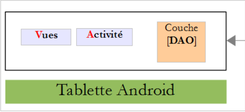

3. دراسة حالة - إدارة المواعيد
3.1. المشروع
في المستند [AngularJS / Spring 4 Tutorial]، تم تطوير تطبيق عميل/خادم لإدارة مواعيد الأطباء. سنشير إلى هذا المستند باسم [rdvmedecins-angular] فيما بعد. كان للتطبيق نوعان من العملاء:
- عميل HTML/CSS/JS؛
- عميل Android؛
تم إنشاء عميل Android تلقائيًا من الإصدار HTML للعميل باستخدام أداة [Cordova]. الهدف من هذا المشروع هو إعادة إنشاء عميل Android هذا يدويًا باستخدام المعرفة المكتسبة في الفصول السابقة.
لاحظ الفرق المهم بين الحلين:
- الحل الذي سنقوم بإنشائه سيعمل فقط على أجهزة Android اللوحية؛
- في إصدار [rdvmedecins-angular]، يعمل عميل الويب للجوال (HTML/CSS/JS) على أي نظام أساسي (Android، iOS، Windows)؛
3.2. طرق عرض عميل Android
هناك أربع وجهات نظر.
طريقة عرض التكوين

طريقة عرض اختيار الطبيب وتاريخ الموعد

شاشة اختيار الفترة الزمنية للموعد

عرض اختيار عميل الموعد

3.3. بنية المشروع
سنستخدم بنية عميل/خادم مشابهة لتلك الموجودة في المثال [مثال-15] (انظر القسم 1.16) من هذا المستند:

سيتم التعامل مع الاتصال غير المتزامن بين العميل والخادم باستخدام مكتبة RxAndroid.
3.4. قاعدة البيانات
لا تلعب قاعدة البيانات دورًا أساسيًا في هذا المستند. نحن نقدمها لأغراض إعلامية. سنسميها [ dbrdvmedecins]. وهي قاعدة بيانات MySQL5 تحتوي على أربعة جداول:
 |
3.4.1. جدول [MEDECINS]
يحتوي على معلومات حول الأطباء الذين يديرهم تطبيق [RdvMedecins].
 |  |
- ID: رقم تعريف الطبيب — المفتاح الأساسي للجدول
- VERSION: رقم يحدد إصدار الصف في الجدول. يزداد هذا الرقم بمقدار 1 في كل مرة يتم فيها إجراء تغيير على الصف.
- LAST_NAME: لقب الطبيب
- FIRST_NAME: الاسم الأول للطبيب
- TITLE: لقبهم (السيدة، السيدة، السيد)
3.4.2. جدول [CLIENTS]
يتم تخزين عملاء الأطباء المختلفين في جدول [CLIENTS]:
 |  |
- ID: رقم تعريف العميل — المفتاح الأساسي للجدول
- VERSION: الرقم الذي يحدد إصدار الصف في الجدول. يزداد هذا الرقم بمقدار 1 في كل مرة يتم فيها إجراء تغيير على الصف.
- LAST NAME: اسم عائلة العميل
- FIRST NAME: الاسم الأول للعميل
- TITLE: لقبهم (السيدة، السيدة، السيد)
3.4.3. جدول [SLOTS]
يسرد هذا الجدول الفترات الزمنية المتاحة للمواعيد:
 |
 |  |  |
- ID: رقم تعريف الفترة الزمنية - المفتاح الأساسي للجدول (الصف 8)
- VERSION: الرقم الذي يحدد إصدار الصف في الجدول. يزداد هذا الرقم بمقدار 1 في كل مرة يتم فيها إجراء تغيير على الصف.
- DOCTOR_ID: رقم التعريف الذي يحدد الطبيب الذي تنتمي إليه هذه الفترة الزمنية – مفتاح خارجي في عمود DOCTORS(ID).
- START_TIME: وقت بدء الفترة الزمنية
- MSTART: دقيقة بدء الفترة الزمنية
- HFIN: وقت انتهاء الفترة الزمنية
- MFIN: دقائق نهاية الفترة الزمنية
يشير الصف الثاني من جدول [SLOTS] (انظر [1] أعلاه)، على سبيل المثال، إلى أن الفترة رقم 2 تبدأ في الساعة 8:20 صباحًا وتنتهي في الساعة 8:40 صباحًا، وهي مخصصة للطبيبة رقم 1 (السيدة ماري بيليسييه).
3.4.4. جدول [RV]
يُدرج المواعيد المحددة لكل طبيب:
 |  |
- ID: معرف فريد للموعد – المفتاح الأساسي
- DAY: يوم الموعد
- SLOT_ID: الفترة الزمنية للموعد – مفتاح خارجي في حقل [ID] في جدول [SLOTS] – يحدد كل من الفترة الزمنية والطبيب المعني.
- CUSTOMER_ID: معرف العميل الذي تم الحجز لصالحه – مفتاح خارجي في حقل [ID] في جدول [CUSTOMERS]
يحتوي هذا الجدول على قيد تفرد على قيم الأعمدة المرتبطة (DAY، SLOT_ID):
إذا كان أحد الصفوف في الجدول [RV] يحتوي على القيمة (DAY1، SLOT_ID1) للأعمدة (DAY، SLOT_ID)، فلا يمكن أن تظهر هذه القيمة في أي مكان آخر. وإلا، فهذا يعني أنه تم حجز موعدين في نفس الوقت لنفس الطبيب. من منظور برمجة Java، يقوم برنامج تشغيل JDBC الخاص بقاعدة البيانات بإصدار استثناء SQLException عند حدوث ذلك.
الصف الذي يحمل الرقم التعريفي 3 (انظر [1] أعلاه) يعني أنه تم حجز موعد للفترة رقم 20 والعميل رقم 4 في 23/08/2006. يوضح لنا جدول [SLOTS] أن الفترة رقم 20 تتوافق مع الفترة الزمنية 4:20 مساءً – 4:40 مساءً وتخص الطبيبة رقم 1 (السيدة ماري بيليسييه). يخبرنا الجدول [CLIENTS] أن العميل رقم 4 هو السيدة بريجيت بيسترو.
3.4.5. إنشاء قاعدة البيانات
لإنشاء الجداول وتعبئتها، يمكنك استخدام البرنامج النصي [dbrdvmedecins.sql]، الذي يمكن العثور عليه في أرشيف الأمثلة |هنا|.
 |
باستخدام [WampServer] (انظر القسم 6.15)، اتبع الخطوات التالية:
 |
- في [1]، انقر على أيقونة [WampServer] واختر خيار [PhpMyAdmin] [2]،
- في [3]، في النافذة التي تفتح، حدد رابط [Databases]،
 |
- في [4-6]، قم باستيراد ملف SQL،
 |  |  |
- في [7]، حدد البرنامج النصي SQL وفي [8] قم بتنفيذه،
- في [9]، تم إنشاء جداول قاعدة البيانات. اتبع أحد الروابط،
 |
- في [10]، محتويات الجدول.
لن نعود إلى قاعدة البيانات هذه مرة أخرى، ولكن ندعو القارئ إلى متابعة تطورها خلال الاختبارات، خاصةً عندما لا يعمل التطبيق.
3.5. خادم الويب / JSON
نركز هنا على الخادم [1]. لن نتطرق إلى مزيد من التفاصيل حوله. فقد تم تفصيله في الوثيقة [Spring MVC و Thymeleaf بالأمثلة]. يمكن للقراء المهتمين الرجوع إليها. تم تطويره مثل الخادم في المثال 15. تم تضمين شفرة المصدر الخاصة به في الأمثلة. سنستخدم هنا ملفه الثنائي:
 |
- [rdvmedecins-server-all-1.0.jar] هو الملف الثنائي للخادم؛
3.5.1. التنفيذ
في نافذة الأوامر، انتقل إلى المجلد الذي يحتوي على الملف الثنائي للخادم:
...\rdvmedecins>dir
Le volume dans le lecteur D s’appelle Données
Le numéro de série du volume est 7A34-AE5F
Répertoire de D:\data\istia-1516\projets\dvp-android-studio\rdvmedecins
09/06/2016 10:50 <DIR> .
09/06/2016 10:50 <DIR> ..
06/07/2014 16:36 7 631 dbrdvmedecins.sql
08/06/2016 16:31 <DIR> rdvmedecins-client
08/06/2016 16:22 <DIR> rdvmedecins-server
08/06/2016 16:23 29 618 709 rdvmedecins-server-all-1.0.jar
ثم، لبدء تشغيل الخادم، أدخل الأمر التالي (يجب أن يكون نظام إدارة قواعد البيانات MySQL قيد التشغيل بالفعل):
...\rdvmedecins>java -jar rdvmedecins-server-all-1.0.jar
. ____ _ __ _ _
/\\ / ___'_ __ _ _(_)_ __ __ _ \ \ \ \
( ( )\___ | '_ | '_| | '_ \/ _` | \ \ \ \
\\/ ___)| |_)| | | | | || (_| | ) ) ) )
' |____| .__|_| |_|_| |_\__, | / / / /
=========|_|==============|___/=/_/_/_/
:: Spring Boot :: (v1.0)
10:55:48.617 [main] INFO rdvmedecins.boot.Boot - Starting Boot v1.0 on st-PC (D:\data\istia-1516\projets\dvp-android-studio\rdvmedecins\rdvmedecins-server-all-1.0.jar started by st in D:\data\istia-1516\projets\dvp-android-studio\rdvmedecins)
10:55:48.621 [main] INFO rdvmedecins.boot.Boot - No active profile set, falling back to default profiles: default
10:55:48.662 [main] INFO o.s.b.c.e.AnnotationConfigEmbeddedWebApplicationContext - Refreshing org.springframework.boot.context.embedded.AnnotationConfigEmbeddedWebApplicationContext@7085bdee: startup date [Thu Jun 09 10:55:48 CEST 2016]; root of context hierarchy
10:55:49.948 [main] INFO o.s.b.c.e.t.TomcatEmbeddedServletContainer - Tomcat initialized with port(s): 8080 (http)
juin 09, 2016 10:55:50 AM org.apache.catalina.core.StandardService startInternal
INFOS: Starting service Tomcat
juin 09, 2016 10:55:50 AM org.apache.catalina.core.StandardEngine startInternal
INFOS: Starting Servlet Engine: Apache Tomcat/8.0.33
juin 09, 2016 10:55:50 AM org.apache.catalina.core.ApplicationContext log
INFOS: Initializing Spring embedded WebApplicationContext
10:55:50.255 [localhost-startStop-1] INFO o.s.web.context.ContextLoader - Root
WebApplicationContext: initialization completed in 1596 ms
...
10:55:55.765 [localhost-startStop-1] INFO o.s.s.web.DefaultSecurityFilterChain
- Creating filter chain: ...]
10:55:55.785 [localhost-startStop-1] INFO o.s.b.c.e.ServletRegistrationBean - Mapping servlet: 'dispatcherServlet' to [/*]
10:55:55.791 [localhost-startStop-1] INFO o.s.b.c.e.FilterRegistrationBean - Mapping filter: 'springSecurityFilterChain' to: [/*]
...
10:55:56.249 [main] INFO o.s.w.s.m.m.a.RequestMappingHandlerMapping - Mapped "{[/getAllCreneaux/{idMedecin}],methods=[GET],produces=[application/json;charset=UTF-8]}" onto public java.lang.String rdvmedecins.controllers.RdvMedecinsController.getAllCreneaux(long,javax.servlet.http.HttpServletResponse,java.lang.String)
throws com.fasterxml.jackson.core.JsonProcessingException
10:55:56.252 [main] INFO o.s.w.s.m.m.a.RequestMappingHandlerMapping - Mapped "{[/getRvMedecinJour/{idMedecin}/{jour}],methods=[GET],produces=[application/json;charset=UTF-8]}" onto public java.lang.String rdvmedecins.controllers.RdvMedecinsController.getRvMedecinJour(long,java.lang.String,javax.servlet.http.HttpServletResponse,java.lang.String) throws com.fasterxml.jackson.core.JsonProcessingException
10:55:56.255 [main] INFO o.s.w.s.m.m.a.RequestMappingHandlerMapping - Mapped "{[/getCreneauById/{id}],methods=[GET],produces=[application/json;charset=UTF-8]}" onto public java.lang.String rdvmedecins.controllers.RdvMedecinsController.getCreneauById(long,javax.servlet.http.HttpServletResponse,java.lang.String) throws
com.fasterxml.jackson.core.JsonProcessingException
10:55:56.257 [main] INFO o.s.w.s.m.m.a.RequestMappingHandlerMapping - Mapped "{[/ajouterRv],methods=[POST],consumes=[application/json;charset=UTF-8],produces=[application/json;charset=UTF-8]}" onto public java.lang.String rdvmedecins.controllers.RdvMedecinsController.ajouterRv(rdvmedecins.models.PostAjouterRv,javax.servlet.http.HttpServletResponse,java.lang.String) throws com.fasterxml.jackson.core.JsonProcessingException
10:55:56.259 [main] INFO o.s.w.s.m.m.a.RequestMappingHandlerMapping - Mapped "{[/getAllClients],methods=[GET],produces=[application/json;charset=UTF-8]}" onto
public java.lang.String rdvmedecins.controllers.RdvMedecinsController.getAllClients(javax.servlet.http.HttpServletResponse,java.lang.String) throws com.fasterxml.jackson.core.JsonProcessingException
10:55:56.261 [main] INFO o.s.w.s.m.m.a.RequestMappingHandlerMapping - Mapped "{[/getClientById/{id}],methods=[GET],produces=[application/json;charset=UTF-8]}"
onto public java.lang.String rdvmedecins.controllers.RdvMedecinsController.getClientById(long,javax.servlet.http.HttpServletResponse,java.lang.String) throws com.fasterxml.jackson.core.JsonProcessingException
10:55:56.264 [main] INFO o.s.w.s.m.m.a.RequestMappingHandlerMapping - Mapped "{[/getMedecinById/{id}],methods=[GET],produces=[application/json;charset=UTF-8]}" onto public java.lang.String rdvmedecins.controllers.RdvMedecinsController.getMedecinById(long,javax.servlet.http.HttpServletResponse,java.lang.String) throws com.fasterxml.jackson.core.JsonProcessingException
10:55:56.266 [main] INFO o.s.w.s.m.m.a.RequestMappingHandlerMapping - Mapped "{[/getRvById/{id}],methods=[GET],produces=[application/json;charset=UTF-8]}" onto public java.lang.String rdvmedecins.controllers.RdvMedecinsController.getRvById(long,javax.servlet.http.HttpServletResponse,java.lang.String) throws com.fasterxml.jackson.core.JsonProcessingException
10:55:56.268 [main] INFO o.s.w.s.m.m.a.RequestMappingHandlerMapping - Mapped "{[/getAllMedecins],methods=[GET],produces=[application/json;charset=UTF-8]}" onto public java.lang.String rdvmedecins.controllers.RdvMedecinsController.getAllMedecins(javax.servlet.http.HttpServletResponse,java.lang.String) throws com.fasterxml.jackson.core.JsonProcessingException
10:55:56.270 [main] INFO o.s.w.s.m.m.a.RequestMappingHandlerMapping - Mapped "{[/supprimerRv],methods=[POST],consumes=[application/json;charset=UTF-8],produces=[application/json;charset=UTF-8]}" onto public java.lang.String rdvmedecins.controllers.RdvMedecinsController.supprimerRv(rdvmedecins.models.PostSupprimerRv,javax.servlet.http.HttpServletResponse,java.lang.String) throws com.fasterxml.jackson.core.JsonProcessingException
10:55:56.273 [main] INFO o.s.w.s.m.m.a.RequestMappingHandlerMapping - Mapped "{[/authenticate],methods=[GET],produces=[application/json;charset=UTF-8]}" onto public java.lang.String rdvmedecins.controllers.RdvMedecinsController.authenticate(javax.servlet.http.HttpServletResponse,java.lang.String) throws com.fasterxml.jackson.core.JsonProcessingException
10:55:56.276 [main] INFO o.s.w.s.m.m.a.RequestMappingHandlerMapping - Mapped "{[/getAgendaMedecinJour/{idMedecin}/{jour}],methods=[GET],produces=[application/json;charset=UTF-8]}" onto public java.lang.String rdvmedecins.controllers.RdvMedecinsController.getAgendaMedecinJour(long,java.lang.String,javax.servlet.http.HttpServletResponse,java.lang.String) throws com.fasterxml.jackson.core.JsonProcessingException
...
10:55:56.681 [main] INFO o.s.b.c.e.t.TomcatEmbeddedServletContainer - Tomcat started on port(s): 8080 (http)
10:55:56.686 [main] INFO rdvmedecins.boot.Boot - Started Boot in 8.231 seconds
يعرض الخادم العديد من السجلات. وقد قمنا بتضمين السجلات ذات الصلة بفهم العملية المذكورة أعلاه فقط:
- الأسطر 14-18: يتم تشغيل خادم Tomcat مدمج على المنفذ 8080 للجهاز. يقوم هذا الخادم بتشغيل تطبيق الويب لإدارة المواعيد. هذا التطبيق هو في الواقع خدمة ويب/JSON: يتم الاستعلام عنه عبر عناوين URL ويستجيب بإرسال سلسلة JSON؛
- السطر 24: يتم تأمين خدمة الويب باستخدام إطار عمل [Spring Security]. يتم الوصول إلى عناوين URL لخدمة الويب عن طريق المصادقة؛
- الأسطر 29-44: عناوين URL التي تعرضها خدمة الويب؛
سنتناول المزيد من التفاصيل حول هذه النقاط.
3.5.2. تأمين خدمة الويب
عناوين URL التي توفرها خدمة الويب مؤمنة. ويتوقع الخادم وجود الرأس التالي في طلب HTTP الصادر عن العميل:
الرمز المتوقع هو ترميز Base64 [http://fr.wikipedia.org/wiki/Base64] للسلسلة 'usernameode-rich" data-linenums="false" style="counter-reset: odtline 0;">:"counter-reset: odtline 0;">passworde-text">'. في حالتها الأولية، لا تقبل خدمة الويب سوى مستخدم باسم 'admin' وكلمة مرور 'admin'. بالنسبة لهذا المستخدم بالذات، يصبح الرأس أعلاه السطر التالي:
لإرسال رأس HTTP هذا، نستخدم عميل HTTP [Advanced Rest Client]، وهو مكون إضافي لمتصفح Chrome (انظر القسم 6.13). سنقوم باختبار مختلف عناوين URL التي تعرضها خدمة الويب يدويًا لفهم:
- المعلمات المتوقعة من عنوان URL؛
- الطبيعة الدقيقة لاستجابته؛
3.5.3. قائمة الأطباء
يسترد عنوان URL [/getAllMedecins] قائمة الأطباء:
 |
- في [1]، عنوان URL الذي يتم الاستعلام عنه؛
- في [2]، طريقة HTTP المستخدمة لهذا الطلب؛
- في [3]، رأس أمان HTTP الخاص بالمستخدم (admin، admin)؛
- في [4]، يتم إرسال طلب HTTP؛
استجابة الخادم هي كما يلي:
 |
- في [5]، استجابة JSON المنسقة من الخادم؛
 |
- في [6]، نفس الاستجابة بتنسيقها الأصلي؛
يسهل النموذج الوارد في [5] رؤية بنية الاستجابة. جميع الاستجابات الواردة من خدمة الويب هي مثيلات لفئة [Response] التالية:
package rdvmedecins.android.dao.service;
import java.util.List;
public class Response<T> {
// ----------------- properties
// operation status
private int status;
// any error messages
private List<String> messages;
// the body of the reply
private T body;
// manufacturers
public Response() {
}
public Response(int status, List<String> messages, T body) {
this.status = status;
this.messages = messages;
this.body = body;
}
// getters and setters
...
}
- السطر 9: حالة الاستجابة. القيمة 0 تعني عدم وجود خطأ؛ وإلا، فهذا يعني حدوث خطأ؛
- السطر 11: قائمة برسائل الخطأ في حالة حدوث خطأ؛
- السطر 13: الاستجابة التي يتوقعها العميل فعليًا؛
الاستجابة لعنوان URL [/getAllMedecins] هي سلسلة JSON لكائن من النوع [Response<List<Medecin>>]. فئة [Medecin] هي كما يلي:
package rdvmedecins.android.dao.entities;
public class Medecin extends Personne {
// default builder
public Medecin() {
}
// builder with parameters
public Medecin(String titre, String nom, String prenom) {
super(titre, nom, prenom);
}
public String toString() {
return String.format("Medecin[%s]", super.toString());
}
}
السطر 3: تمتد فئة [Doctor] من فئة [Person] التالية:
package rdvmedecins.android.dao.entities;
public class Personne extends AbstractEntity {
// attributes of a person
private String titre;
private String nom;
private String prenom;
// default builder
public Personne() {
}
// builder with parameters
public Personne(String titre, String nom, String prenom) {
this.titre = titre;
this.nom = nom;
this.prenom = prenom;
}
// toString
public String toString() {
return String.format("Personne[%s, %s, %s, %s, %s]", id, version, titre, nom, prenom);
}
// getters and setters
...
}
السطر 3: تمتد فئة [Person] من فئة [AbstractEntity] التالية:
package rdvmedecins.android.dao.entities;
import java.io.Serializable;
public class AbstractEntity implements Serializable {
private static final long serialVersionUID = 1L;
protected Long id;
protected Long version;
@Override
public int hashCode() {
int hash = 0;
hash += (id != null ? id.hashCode() : 0);
return hash;
}
// initialization
public AbstractEntity build(Long id, Long version) {
this.id = id;
this.version = version;
return this;
}
@Override
public boolean equals(Object entity) {
String class1 = this.getClass().getName();
String class2 = entity.getClass().getName();
if (!class2.equals(class1)) {
return false;
}
AbstractEntity other = (AbstractEntity) entity;
return this.id == other.id;
}
// getters and setters
...
}
في النهاية، تكون بنية كائن [Doctor] كما يلي:
[Long id; Long version; String titre; String nom; String prenom;]
وبنية [Response<List<Doctor>>] هي كما يلي:
من الآن فصاعدًا، سنستخدم هذه التعريفات المختصرة لوصف استجابة الخادم. بالإضافة إلى ذلك، لن ندرج لقطات شاشة في الوقت الحالي. ما عليك سوى مراجعة ما تناولناه للتو. سنعود إلى لقطات الشاشة عندما يحين وقت إجراء طلب POST. كما سنقدم مثالاً على التنفيذ بالصيغة التالية:
3.5.4. قائمة العملاء
|
مثال:
3.5.5. قائمة بمواعيد زيارة الطبيب
|
- [idMedecin]: معرف الطبيب الذي تريد حجز مواعيد له؛
- [startTime]: وقت بدء الموعد؛
- [start_time]: وقت بدء الاستشارة؛
- [hfin]: وقت انتهاء الاستشارة؛
- [endmin] : الدقائق المتبقية حتى نهاية الاستشارة؛
بالنسبة لفترة زمنية بين 10:20 و 10:40، يكون لدينا [starts, starts, ends, ends] = [10, 20, 10, 40].
مثال:
3.5.6. قائمة مواعيد الطبيب
|
- [idMedic] : معرف الطبيب الذي تم طلب مواعيده؛
- URL [day]: يوم المواعيد بتنسيق 'yyyy-mm-dd'؛
- الاستجابة [اليوم]: كما هو مذكور أعلاه، ولكن في شكل تاريخ Java؛
- [client]: العميل الذي طلب الموعد. تم وصف هيكله سابقًا؛
- [idClient]: معرف العميل؛
- [slot]: موعد المراجعة. تم وصف هيكله سابقًا؛
- [slotId]: معرف الفترة الزمنية؛
مثال:
3.5.7. جدول مواعيد الطبيب
|
- [doctorId]: معرف الطبيب الذي تريد مواعيده؛
- URL [day] : يوم المواعيد بالصيغة 'yyyy-mm-dd' ;
- [calendar]: تقويم الطبيب؛
- [doctor]: الطبيب المعني. تم تحديد هيكله مسبقًا؛
- Response [day]: يوم التقويم بتنسيق تاريخ Java؛
- [doctorDaySlots]: مصفوفة من العناصر من النوع [DoctorDaySlot]؛
- [slot]: فتحة. تم وصف هيكلها سابقًا؛
- [موعد]: موعد. وقد تم وصف هيكله سابقًا؛
مثال:
|
لقد أبرزنا الحالة التي يوجد فيها موعد في الفترة الزمنية والحالة التي لا يوجد فيها موعد.
3.5.8. البحث عن طبيب باستخدام رقم الهوية
|
- [doctorId]: معرف الطبيب؛
مثال 1:
المثال 2:
3.5.9. الحصول على عميل حسب المعرف
|
- [idClient]: معرف العميل؛
مثال 1:
المثال 2:
3.5.10. احجز موعدًا باستخدام معرفك
|
- [slotId]: معرف الفتحة؛
مثال 1:
لاحظ أن الرد لا يتضمن اسم الطبيب الذي يمتلك الموعد، بل يقتصر على رقم تعريفه فقط.
المثال 2:
3.5.11. الحصول على موعد باستخدام معرّفه
|
- [idRv]: معرف الموعد؛
مثال 1:
لاحظ أن الرد لا يتضمن العميل أو موعد الزيارة، بل يتضمن فقط معرّفيهما.
المثال 2:
3.5.12. إضافة موعد
يتيح لك الرابط [/addAppointment] إضافة موعد. يتم إرسال المعلومات المطلوبة لإضافة هذا الموعد (اليوم، والفترة الزمنية، والعميل) عبر طلب HTTP POST. نعرض كيفية إجراء هذا الطلب باستخدام أداة [Advanced Rest Client].

- في [1]، عنوان URL الذي يتم الاستعلام عنه؛
- في [2]، يتم الاستعلام عنه عبر طلب POST؛
- في [3-4]، نحدد للخادم أن القيم التي يتم نشرها بتنسيق JSON؛
- في [4]، رأس مصادقة HTTP؛
- في [5]، المعلومات المرسلة عبر طلب POST. هذه سلسلة JSON تحتوي على:
- [day]: يوم الموعد بتنسيق 'yyyy-mm-dd'،
- [idClient]: معرف العميل الذي يتم تحديد الموعد له،
- [idCreneau]: معرف فترة الموعد. نظرًا لأن فترة الموعد تخص طبيبًا معينًا، فإن هذا يشير أيضًا إلى الطبيب؛
- في [6]، يتم إرسال الطلب؛
سلسلة JSON التي يتم نشرها هي تلك الخاصة بالكائن [PostAjouterRv] التالي:
public class PostAjouterRv {
// pOST DATA
private String jour;
private long idClient;
private long idCreneau;
// manufacturers
public PostAjouterRv() {
}
public PostAjouterRv(String jour, long idCreneau, long idClient) {
this.jour = jour;
this.idClient = idClient;
this.idCreneau = idCreneau;
}
// getters and setters
...
}
استجابة الخادم من النوع [Response<Rv>] [int status; List<String> messages; Rv rv]، حيث [rv] هو الموعد المضاف.
استجابة الخادم للطلب أعلاه هي كما يلي:
 |
يرجى ملاحظة أن بعض المعلومات غير مدرجة [idClient، idCreneau]، ولكن يمكن العثور عليها في الحقلين [client] و[creneau]. والمعلومة المهمة هي معرّف الموعد المضاف (209). وكان بإمكان خدمة الويب أن تكتفي بإرجاع هذه المعلومة الوحيدة.
3.5.13. حذف موعد
يتم تنفيذ هذه العملية أيضًا عبر طلب POST:
|
القيمة المرسلة هي سلسلة JSON لكائن من النوع [PostSupprimerRv] على النحو التالي:
public class PostSupprimerRv {
// pOST DATA
private long idRv;
// manufacturers
public PostSupprimerRv() {
}
public PostSupprimerRv(long idRv) {
this.idRv = idRv;
}
// getters and setters
...
}
- السطر 4: [idRv] هو معرف الموعد المراد حذفه.
مثال 1:
تم حذف الموعد رقم 209 بنجاح بسبب [status=0].
المثال 2:
3.6. عميل Android
الآن بعد أن تم وصف الخادم [1] بالتفصيل وأصبح جاهزًا للعمل، سنقوم بفحص عميل Android [2].
3.6.1. بنية مشروع Android Studio
يستخدم المشروع بنية مشروع [client-android-skel] (انظر القسم 1.17). في بنية عميل أندرويد الموضحة أعلاه، توجد ثلاث طبقات متميزة:
- طبقة [DAO] المسؤولة عن الاتصال بخدمة الويب؛
- [الطرق] المسؤولة عن التواصل مع المستخدم؛
- [النشاط] الذي يعمل كحلقة وصل بين المجموعتين السابقتين. لا تعرف العروض طبقة [DAO]. فهي تتواصل فقط مع النشاط.
تنعكس هذه البنية في مشروع Android Studio الخاص بعميل Android:
 |
- تقوم حزمة [activity] بتنفيذ النشاط؛
- تتضمن حزمة [architecture] العناصر المعمارية التي طورناها سابقًا؛
- حزمة [dao] تنفذ طبقة [DAO]؛
- حزمة [fragments] تنفذ [views]؛
3.6.2. تخصيص المشروع
 |
يحتوي المجلد [architecture/custom] على العناصر القابلة للتخصيص في البنية.
واجهة [IMainActivity] هي كما يلي:
package client.android.architecture.custom;
import client.android.architecture.core.ISession;
import client.android.dao.service.IDao;
public interface IMainActivity extends IDao {
// session access
ISession getSession();
// change of view
void navigateToView(int position, ISession.Action action);
// wait management
void beginWaiting();
void cancelWaiting();
// constant application -------------------------------------
// debug mode
boolean IS_DEBUG_ENABLED = true;
// maximum time to wait for server response
int TIMEOUT = 1000;
// waiting time before executing customer request
int DELAY = 000;
// basic authentication
boolean IS_BASIC_AUTHENTIFICATION_NEEDED = true;
// fragment adjacency
int OFF_SCREEN_PAGE_LIMIT = 1;
// tab bar
boolean ARE_TABS_NEEDED = false;
// waiting image
boolean IS_WAITING_ICON_NEEDED = true;
// number of application fragments
int FRAGMENTS_COUNT = 4;
// view n°s
int VUE_CONFIG = 0;
int VUE_ACCUEIL = 1;
int VUE_AGENDA = 2;
int VUE_AJOUT_RV = 3;
}
- السطران 25 و28: تخصيص طبقة [DAO]؛
- السطر 31: يقوم هذا التطبيق بإرسال طلبات مصادق عليها إلى الخادم؛
- السطر 40: يلزم وجود صورة تحميل؛
- السطر 43: يحتوي التطبيق على أربعة أجزاء؛
- الأسطر 46-49: أرقام الأجزاء الأربعة؛
- السطر 37: لا توجد علامات تبويب؛
ستكون الفئة الأساسية [CoreState] لحالات الأجزاء كما يلي:
package client.android.architecture.custom;
import client.android.architecture.core.MenuItemState;
import client.android.fragments.state.AccueilFragmentState;
import client.android.fragments.state.AgendaFragmentState;
import client.android.fragments.state.AjoutRvFragmentState;
import client.android.fragments.state.ConfigFragmentState;
import com.fasterxml.jackson.annotation.JsonIgnoreProperties;
import com.fasterxml.jackson.annotation.JsonSubTypes;
import com.fasterxml.jackson.annotation.JsonTypeInfo;
@JsonIgnoreProperties(ignoreUnknown = true)
@JsonTypeInfo(use = JsonTypeInfo.Id.NAME, include = JsonTypeInfo.As.PROPERTY)
@JsonSubTypes({
@JsonSubTypes.Type(value = AccueilFragmentState.class),
@JsonSubTypes.Type(value = AgendaFragmentState.class),
@JsonSubTypes.Type(value = AjoutRvFragmentState.class),
@JsonSubTypes.Type(value = ConfigFragmentState.class)
}
)
public class CoreState {
// fragment visited or not
protected boolean hasBeenVisited = false;
// status of any fragment menu
protected MenuItemState[] menuOptionsState;
// getters and setters
...
}
- الأسطر 15–18: الأجزاء الأربعة لها حالة:
 |
وأخيرًا، تحتوي الجلسة على البيانات التي تمت مشاركتها بين الأجزاء:
package client.android.architecture.custom;
import client.android.architecture.core.AbstractSession;
import client.android.dao.entities.AgendaMedecinJour;
import client.android.dao.entities.Client;
import client.android.dao.entities.Medecin;
import client.android.fragments.state.AccueilFragmentState;
import client.android.fragments.state.AgendaFragmentState;
import client.android.fragments.state.AjoutRvFragmentState;
import client.android.fragments.state.ConfigFragmentState;
import java.util.List;
public class Session extends AbstractSession {
// elements that cannot be serialized as jSON must be annotated with @JsonIgnore
// list of doctors
private List<Medecin> médecins;
// customer list
private List<Client> clients;
// a doctor's diary for a given day
private AgendaMedecinJour agenda;
// position of clicked item in diary
private int position;
// rv day in English notation "yyyy-MM-dd"
private String dayRv;
// rv day in French notation "dd-MM-yyyy"
private String jourRv;
// getters and setters
...
}
- الأسطر 17–28: تخزن الجلسة ستة عناصر من المعلومات. سنشرح أدوارها عند الضرورة.
3.6.3. طبقة [DAO]
 |
 |  |
- في [1]، الكيانات المُغلفة في استجابات الخادم. وقد تم عرضها في القسم 3.5؛
- في [2]، مكونات العميل التي تتولى الاتصال بالخادم؛
لن نعيد النظر في المكونات الواردة في [1]. فقد تم عرضها بالفعل. وندعو القارئ إلى الرجوع إلى القسم 3.5 إذا لزم الأمر. وسنقوم بفحص تنفيذ حزمة [service]. وسيقودنا هذا أيضًا إلى مناقشة تنفيذ الاتصال الآمن بين العميل والخادم.
3.6.3.1. تنفيذ الاتصال بين العميل والخادم
 |
فئة [WebClient] هي مكون AA يصف:
- عناوين URL التي تعرضها خدمة الويب؛
- معلماتها؛
- استجاباتها؛
package rdvmedecins.android.dao.service;
import rdvmedecins.android.dao.entities.;
import org.androidannotations.rest.spring.annotations.;
import org.androidannotations.rest.spring.api.RestClientRootUrl;
import org.androidannotations.rest.spring.api.RestClientSupport;
import org.springframework.http.converter.json.MappingJackson2HttpMessageConverter;
import org.springframework.web.client.RestTemplate;
import java.util.List;
@Rest(converters = {MappingJackson2HttpMessageConverter.class})
public interface WebClient extends RestClientRootUrl, RestClientSupport {
// RestTemplate
public void setRestTemplate(RestTemplate restTemplate);
// list of doctors
@Get("/getAllMedecins")
public Response<List<Medecin>> getAllMedecins();
// customer list
@Get("/getAllClients")
public Response<List<Client>> getAllClients();
// list of physician slots
@Get("/getAllCreneaux/{idMedecin}")
public Response<List<Creneau>> getAllCreneaux(@Path long idMedecin);
// list of doctor's appointments
@Get("/getRvMedecinJour/{idMedecin}/{jour}")
public Response<List<Rv>> getRvMedecinJour(@Path long idMedecin, @Path String jour);
// Customer
@Get("/getClientById/{id}")
public Response<Client> getClientById(@Path long id);
// Doctor
@Get("/getMedecinById/{id}")
public Response<Medecin> getMedecinById(@Path long id);
// Rv
@Get("/getRvById/{id}")
public Response<Rv> getRvById(@Path long id);
// Niche
@Get("/getCreneauById/{id}")
public Response<Creneau> getCreneauById(@Path long id);
// add a RV
@Post("/ajouterRv")
public Response<Rv> ajouterRv(@Body PostAjouterRv post);
// delete an appointment
@Post("/supprimerRv")
public Response<Rv> supprimerRv(@Body PostSupprimerRv post);
// get a doctor's schedule
@Get(value = "/getAgendaMedecinJour/{idMedecin}/{jour}")
public Response<AgendaMedecinJour> getAgendaMedecinJour(@Path long idMedecin, @Path String jour);
}
- الأسطر 19–60: جميع عناوين URL التي تمت مناقشتها في القسم 3.5 موجودة؛
- السطر 16: مكون [RestTemplate] من [Spring Android] الذي تستند إليه الاتصالات بين العميل والخادم؛
3.6.3.2. واجهة [IDao]
 |
واجهة [IDao] لطبقة [DAO] هي كما يلي:
package rdvmedecins.android.dao.service;
import rdvmedecins.android.dao.entities.*;
import rx.Observable;
import java.util.List;
public interface IDao {
// Web service url
public void setUrlServiceWebJson(String url);
// user
public void setUser(String user, String mdp);
// customer timeout
public void setTimeout(int timeout);
// customer list
public Observable<List<Client>> getAllClients();
// list of doctors
public Observable<List<Medecin>> getAllMedecins();
// list of physician slots
public Observable<List<Creneau>> getAllCreneaux(long idMedecin);
// list of doctor's appointments on a given day
public Observable<List<Rv>> getRvMedecinJour(long idMedecin, String jour);
// find a customer identified by its id
public Observable<Client> getClientById(long id);
// find a doctor identified by his id
public Observable<Medecin> getMedecinById(long id);
// find an Rv identified by its id
public Observable<Rv> getRvById(long id);
// find a time slot identified by its id
public Observable<Creneau> getCreneauById(long id);
// add a RV to the list
public Observable<Rv> ajouterRv(String jour, long idCreneau, long idClient);
// delete a RV
public Observable<Rv> supprimerRv(long idRv);
// job
public Observable<AgendaMedecinJour> getAgendaMedecinJour(long idMedecin, String jour);
// debug mode
void setDebugMode(boolean isDebugEnabled);
}
- السطر 10: لتعيين عنوان URL لخدمة الويب / JSON؛
- السطر 13: لتعيين المستخدم للاتصال بين العميل والخادم. [user] هو معرف المستخدم، و[password] هي كلمة المرور؛
- السطر 16: لتعيين الحد الأقصى لوقت انتظار استجابة الخادم؛
- الأسطر 18–49: كل عنوان URL تعرضه خدمة الويب يتوافق مع طريقة. وهي تستخدم نفس توقيعات الطرق مثل مكون AA [WebClient]؛
- السطر 52: للتحكم في وضع التصحيح لطبقة [DAO]؛
3.6.3.3. فئة [Dao]
 |
فيما يلي تطبيق [DAO] للواجهة [IDao] السابقة:
package client.android.dao.service;
import android.util.Log;
import client.android.dao.entities.*;
import org.androidannotations.annotations.AfterInject;
import org.androidannotations.annotations.Bean;
import org.androidannotations.annotations.EBean;
import org.androidannotations.rest.spring.annotations.RestService;
import org.springframework.http.client.ClientHttpRequestInterceptor;
import org.springframework.http.client.SimpleClientHttpRequestFactory;
import org.springframework.http.converter.json.MappingJackson2HttpMessageConverter;
import org.springframework.web.client.RestTemplate;
import rx.Observable;
import java.util.ArrayList;
import java.util.List;
@EBean(scope = EBean.Scope.Singleton)
public class Dao extends AbstractDao implements IDao {
// web service customer
@RestService
protected WebClient webClient;
// safety
@Bean
protected MyAuthInterceptor authInterceptor;
// on RestTemplate
private RestTemplate restTemplate;
// factory du RestTemplate
private SimpleClientHttpRequestFactory factory;
@AfterInject
public void afterInject() {
...
}
@Override
public void setUrlServiceWebJson(String url) {
...
}
@Override
public void setUser(String user, String mdp) {
...
}
@Override
public void setTimeout(int timeout) {
...
}
@Override
public void setBasicAuthentification(boolean isBasicAuthentificationNeeded) {
if (isDebugEnabled) {
Log.d(className, String.format("setBasicAuthentification thread=%s, isBasicAuthentificationNeeded=%s", Thread.currentThread().getName(), isBasicAuthentificationNeeded));
}
// authentication interceptor?
if (isBasicAuthentificationNeeded) {
// add the authentication interceptor
List<ClientHttpRequestInterceptor> interceptors = new ArrayList<ClientHttpRequestInterceptor>();
interceptors.add(authInterceptor);
restTemplate.setInterceptors(interceptors);
}
}
// méthodes privées -------------------------------------------------
private void log(String message) {
if (isDebugEnabled) {
Log.d(className, message);
}
}
// implementation of the IDao interface --------------------------------------------------------------------
@Override
public Observable<Response<List<Client>>> getAllClients() {
// log
log("getAllClients");
// result
return getResponse(new IRequest<Response<List<Client>>>() {
@Override
public Response<List<Client>> getResponse() {
return webClient.getAllClients();
}
});
}
@Override
public Observable<Response<List<Medecin>>> getAllMedecins() {
// log
log("getAllMedecins");
// result
return getResponse(new IRequest<Response<List<Medecin>>>() {
@Override
public Response<List<Medecin>> getResponse() {
return webClient.getAllMedecins();
}
});
}
@Override
public Observable<Response<List<Creneau>>> getAllCreneaux(final long idMedecin) {
// log
log("getAllCreneaux");
// result
return getResponse(new IRequest<Response<List<Creneau>>>() {
@Override
public Response<List<Creneau>> getResponse() {
return webClient.getAllCreneaux(idMedecin);
}
});
}
@Override
public Observable<Response<List<Rv>>> getRvMedecinJour(final long idMedecin, final String jour) {
// log
log("getRvMedecinJour");
// result
return getResponse(new IRequest<Response<List<Rv>>>() {
@Override
public Response<List<Rv>> getResponse() {
return webClient.getRvMedecinJour(idMedecin, jour);
}
});
}
@Override
public Observable<Response<Client>> getClientById(final long id) {
// log
log("getClientById");
// result
return getResponse(new IRequest<Response<Client>>() {
@Override
public Response<Client> getResponse() {
return webClient.getClientById(id);
}
});
}
@Override
public Observable<Response<Medecin>> getMedecinById(final long id) {
// log
log("getMedecinById");
// result
return getResponse(new IRequest<Response<Medecin>>() {
@Override
public Response<Medecin> getResponse() {
return webClient.getMedecinById(id);
}
});
}
@Override
public Observable<Response<Rv>> getRvById(final long id) {
// log
log("getRvById");
// result
return getResponse(new IRequest<Response<Rv>>() {
@Override
public Response<Rv> getResponse() {
return webClient.getRvById(id);
}
});
}
@Override
public Observable<Response<Creneau>> getCreneauById(final long id) {
// log
log("getCreneauById");
// result
return getResponse(new IRequest<Response<Creneau>>() {
@Override
public Response<Creneau> getResponse() {
return webClient.getCreneauById(id);
}
});
}
@Override
public Observable<Response<Rv>> ajouterRv(final String jour, final long idCreneau, final long idClient) {
// log
log("ajouterRv");
// result
return getResponse(new IRequest<Response<Rv>>() {
@Override
public Response<Rv> getResponse() {
return webClient.ajouterRv(new PostAjouterRv(jour, idCreneau, idClient));
}
});
}
@Override
public Observable<Response<Rv>> supprimerRv(final long idRv) {
// log
log("supprimerRv");
// result
return getResponse(new IRequest<Response<Rv>>() {
@Override
public Response<Rv> getResponse() {
return webClient.supprimerRv(new PostSupprimerRv(idRv));
}
});
}
@Override
public Observable<Response<AgendaMedecinJour>> getAgendaMedecinJour(final long idMedecin, final String jour) {
// log
log("getAgendaMedecinJour");
// result
return getResponse(new IRequest<Response<AgendaMedecinJour>>() {
@Override
public Response<AgendaMedecinJour> getResponse() {
return webClient.getAgendaMedecinJour(idMedecin, jour);
}
});
}
}
- الأسطر 18–72: هذه هي الأسطر الافتراضية في فئة [Dao] لمشروع [client-android-skel]؛
- الأسطر 74–216: تنفيذ واجهة [IDao]. تقوم الطرق التي تستعلم عن عناوين URL التي تكشفها خدمة الويب بتفويض هذا الاستعلام إلى مكون AA [WebClient] (الأسطر 22–23)؛
- الأسطر 58–63: إذا تمت مصادقة التبادلات بين العميل والخادم باستخدام المصادقة الأساسية، تتم إضافة معترض إلى مكون [RestTemplate]. سيؤدي هذا إلى اعتراض أي طلب HTTP مرسَل من مكون [RestTemplate] بواسطة فئة [MyAuthInterceptor] (الأسطر 25–26)؛
فئة [MyAuthInterceptor] هي كما يلي:
package rdvmedecins.android.dao.security;
import org.androidannotations.annotations.Bean;
import org.androidannotations.annotations.EBean;
import org.springframework.http.HttpAuthentication;
import org.springframework.http.HttpBasicAuthentication;
import org.springframework.http.HttpHeaders;
import org.springframework.http.HttpRequest;
import org.springframework.http.client.ClientHttpRequestExecution;
import org.springframework.http.client.ClientHttpRequestInterceptor;
import org.springframework.http.client.ClientHttpResponse;
import java.io.IOException;
@EBean(scope = EBean.Scope.Singleton)
public class MyAuthInterceptor implements ClientHttpRequestInterceptor {
// user
private String user;
private String mdp;
public ClientHttpResponse intercept(HttpRequest request, byte[] body, ClientHttpRequestExecution execution) throws IOException {
HttpHeaders headers = request.getHeaders();
HttpAuthentication auth = new HttpBasicAuthentication(user, mdp);
headers.setAuthorization(auth);
return execution.execute(request, body);
}
public void setUser(String user, String mdp) {
this.user = user;
this.mdp = mdp;
}
}
- السطر 15: فئة [MyAuthInterceptor] هي مكون AA من النوع [singleton]؛
- السطر 16: تمتد فئة [MyAuthInterceptor] واجهة Spring [ClientHttpRequestInterceptor]. تحتوي هذه الواجهة على طريقة واحدة، وهي طريقة [intercept] في السطر 22. نقوم بتمديد هذه الواجهة لاعتراض أي طلب HTTP من العميل. تأخذ طريقة [intercept] ثلاثة معلمات؛
- [HttpRequest request]: طلب HTTP المعترض،
- [byte[] body]: نصه، إن وجد (القيم المنشورة، على سبيل المثال)،
- [ClientHttpRequestExecution execution]: مكون Spring الذي ينفذ الطلب؛
نقوم باعتراض جميع طلبات HTTP الواردة من عميل Android لإضافة رأس مصادقة HTTP الموضح في القسم 3.5.
- السطر 23: نسترد رؤوس HTTP للطلب المعترض؛
- السطر 24: نقوم بإنشاء رأس مصادقة HTTP. يتم توفير طريقة المصادقة المستخدمة (ترميز Base64 للسلسلة 'user:mdp') بواسطة فئة Spring [HttpBasicAuthentication]؛
- السطر 25: يتم إضافة رأس المصادقة الذي أنشأناه للتو إلى الرؤوس الحالية للطلب المعترض؛
- السطر 26: نواصل تنفيذ الطلب المعترض. باختصار، تم إثراء الطلب المعترض برأس المصادقة؛
تتبع جميع تطبيقات الطرق في واجهة [IDao] نفس النمط. لنأخذ مثالاً على طريقة [getAgendaMedecinJour]:
@Override
public Observable<Response<AgendaMedecinJour>> getAgendaMedecinJour(final long idMedecin, final String jour) {
// log
log("getAgendaMedecinJour");
// result
return getResponse(new IRequest<Response<AgendaMedecinJour>>() {
@Override
public Response<AgendaMedecinJour> getResponse() {
return webClient.getAgendaMedecinJour(idMedecin, jour);
}
});
}
- السطر 2: تتوقع الطريقة معلمتين:
- [idMedecin]: معرف الطبيب الذي نريد جدول مواعيده؛
- [day]: اليوم الذي نريد جدول مواعيده؛
- السطر 6: نستدعي طريقة [getResponse] للفئة الأم [AbstractDao]. تتوقع هذه الطريقة معلمة من النوع [IRequest<T>]، حيث T هو النوع الذي تعيده طريقة [getAgendaMedecinJour] في السطر 2، وهو في هذه الحالة [Response<AgendaMedecinJour>]. تحتوي واجهة [IRequest] على طريقة واحدة فقط: [getResponse] (السطر 8)؛
- الأسطر 8-10: تنفيذ طريقة [IRequest.getResponse]. يجب أن تُرجع هذه الطريقة النتيجة المتوقعة من طريقة [getAgendaMedecinJour] في السطر 2، من النوع [Response<AgendaMedecinJour>]؛
- السطر 9: يتم إرجاع الاستجابة بواسطة طريقة [webClient.getAgendaMedecinJour]:
// get a doctor's schedule
@Get(value = "/getAgendaMedecinJour/{idMedecin}/{jour}")
Response<AgendaMedecinJour> getAgendaMedecinJour(@Path long idMedecin, @Path String jour);
المعلمات المستخدمة في السطر 9 هي تلك التي تم تمريرها إلى طريقة [getAgendaMedecinJour] في السطر 2. ولهذا السبب، يجب أن تحتوي هذه المعلمات على السمة final؛
3.6.4. [MainActivity]
الخادم  |
 |
فيما يلي فئة [MainActivity]:
package client.android.activity;
import android.util.Log;
import client.android.architecture.core.AbstractActivity;
import client.android.architecture.core.AbstractFragment;
import client.android.architecture.custom.IMainActivity;
import client.android.dao.entities.*;
import client.android.dao.service.Dao;
import client.android.dao.service.IDao;
import client.android.dao.service.Response;
import client.android.fragments.behavior.AccueilFragment_;
import client.android.fragments.behavior.AgendaFragment_;
import client.android.fragments.behavior.AjoutRvFragment_;
import client.android.fragments.behavior.ConfigFragment_;
import org.androidannotations.annotations.Bean;
import org.androidannotations.annotations.EActivity;
import rx.Observable;
import java.util.List;
@EActivity
public class MainActivity extends AbstractActivity {
// layer [DAO]
@Bean(Dao.class)
protected IDao dao;
// parent class ---------------------------------------
@Override
protected void onCreateActivity() {
// log
if (IS_DEBUG_ENABLED) {
Log.d(className, "onCreateActivity");
}
}
@Override
protected IDao getDao() {
return dao;
}
@Override
protected AbstractFragment[] getFragments() {
AbstractFragment[] fragments= new AbstractFragment[]{new ConfigFragment_(), new AccueilFragment_(), new AgendaFragment_(), new AjoutRvFragment_()};
return fragments;
}
@Override
protected CharSequence getFragmentTitle(int position) {
return null;
}
@Override
protected void navigateOnTabSelected(int position) {
}
@Override
protected int getFirstView() {
return IMainActivity.VUE_CONFIG;
}
// interface IDao -----------------------------------------------------
...
@Override
public Observable<Response<List<Client>>> getAllClients() {
return dao.getAllClients();
}
@Override
public Observable<Response<List<Medecin>>> getAllMedecins() {
return dao.getAllMedecins();
}
@Override
public Observable<Response<List<Creneau>>> getAllCreneaux(long idMedecin) {
return dao.getAllCreneaux(idMedecin);
}
@Override
public Observable<Response<List<Rv>>> getRvMedecinJour(long idMedecin, String jour) {
return dao.getRvMedecinJour(idMedecin, jour);
}
@Override
public Observable<Response<Client>> getClientById(long id) {
return dao.getClientById(id);
}
@Override
public Observable<Response<Medecin>> getMedecinById(long id) {
return dao.getMedecinById(id);
}
@Override
public Observable<Response<Rv>> getRvById(long id) {
return dao.getRvById(id);
}
@Override
public Observable<Response<Creneau>> getCreneauById(long id) {
return dao.getCreneauById(id);
}
@Override
public Observable<Response<Rv>> ajouterRv(String jour, long idCreneau, long idClient) {
return dao.ajouterRv(jour, idCreneau, idClient);
}
@Override
public Observable<Response<Rv>> supprimerRv(long idRv) {
return dao.supprimerRv(idRv);
}
@Override
public Observable<Response<AgendaMedecinJour>> getAgendaMedecinJour(long idMedecin, String jour) {
return dao.getAgendaMedecinJour(idMedecin, jour);
}
}
- الأسطر 21–66: هذه الأسطر موجودة بشكل افتراضي في القالب [client-android-skel]؛
- الأسطر 66–119: تنفيذ واجهة [IDao]. تفوض جميع الطرق العمل إلى طبقة [DAO] في السطر 26؛
- الأسطر 42-46: تُرجع طريقة [getFragments] مصفوفة الأجزاء الأربعة للتطبيق؛
- الأسطر 58-61: عرض التكوين هو أول عرض يتم عرضه عند بدء تشغيل التطبيق؛
3.6.5. الجلسة
 |
تُستخدم فئة [Session] لتخزين المعلومات التي يجب تمريرها بين الأجزاء. وهي كما يلي:
package rdvmedecins.android.architecture;
import rdvmedecins.android.dao.entities.AgendaMedecinJour;
import rdvmedecins.android.dao.entities.Client;
import rdvmedecins.android.dao.entities.Medecin;
import org.androidannotations.annotations.EBean;
import java.util.List;
@EBean(scope = EBean.Scope.Singleton)
public class Session {
// list of doctors
private List<Medecin> médecins;
// customer list
private List<Client> clients;
// agenda
private AgendaMedecinJour agenda;
// position of clicked item in diary
private int position;
// rv day in English notation "yyyy-MM-dd"
private String dayRv;
// rv day in French notation "dd-MM-yyyy"
private String jourRv;
// getters and setters
...
}
- السطر 10: فئة [Session] هي مكون AA تم إنشاء مثيل واحد له؛
- الأسطر 12-15: في هذه الدراسة الحالة، سنفترض أن قوائم الأطباء والعملاء لا تتغير. سنقوم باستردادها عند بدء تشغيل التطبيق وتخزينها في الجلسة حتى تتمكن الأجزاء من استخدامها؛
- الأسطر 20-23: التاريخ المطلوب للموعد. يتم التعامل معه بتنسيقين: بالتنسيق الفرنسي (السطر 23) داخل عميل Android، وبالتنسيق الإنجليزي (السطر 21) للتواصل مع الخادم؛
- السطر 19: موضع العنصر الذي تم النقر عليه (رابط الإضافة/الحذف) في التقويم؛
3.6.6. إدارة عرض التكوين
3.6.6.1. طريقة العرض
عرض التكوين هو العرض الذي يظهر عند بدء تشغيل التطبيق:

عناصر الواجهة المرئية هي كما يلي:
3.6.6.2. الجزء
يتم إدارة عرض التكوين بواسطة الجزء التالي [ConfigFragment]:
 |
package client.android.fragments.behavior;
import android.util.Log;
import android.view.View;
import android.widget.Button;
import android.widget.EditText;
import android.widget.TextView;
import client.android.R;
import client.android.architecture.core.AbstractFragment;
import client.android.architecture.core.ISession;
import client.android.architecture.core.MenuItemState;
import client.android.architecture.custom.CoreState;
import client.android.architecture.custom.IMainActivity;
import client.android.dao.entities.Client;
import client.android.dao.entities.Medecin;
import client.android.dao.service.Response;
import client.android.fragments.state.ConfigFragmentState;
import org.androidannotations.annotations.*;
import rx.functions.Action1;
import java.net.URI;
import java.util.List;
@EFragment(R.layout.config)
@OptionsMenu(R.menu.menu_config)
public class ConfigFragment extends AbstractFragment {
// visual interface elements
@ViewById(R.id.edt_urlServiceRest)
protected EditText edtUrlServiceRest;
@ViewById(R.id.txt_errorUrlServiceRest)
protected TextView txtErrorUrlServiceRest;
@ViewById(R.id.txt_errorUtilisateur)
protected TextView txtErrorUtilisateur;
@ViewById(R.id.edt_utilisateur)
protected EditText edtUtilisateur;
@ViewById(R.id.edt_mdp)
protected EditText edtMdp;
// seizures
private String urlServiceRest;
private String utilisateur;
private String mdp;
// validation page
@OptionsItem(R.id.actionValider)
protected void doValider() {
...
}
..
// implementation methods parent class -------------------------------------------
...
}
- السطر 25: ترتبط هذه المقتطفات بقائمة [menu_config] التالية:
 |
<menu xmlns:android="http://schemas.android.com/apk/res/android"
xmlns:app="http://schemas.android.com/apk/res-auto"
xmlns:tools="http://schemas.android.com/tools"
tools:context=".activity.MainActivity1">
<item
android:id="@+id/menuActions"
app:showAsAction="ifRoom"
android:title="@string/menuActions">
<menu>
<item
android:id="@+id/actionValider"
android:title="@string/actionValider"/>
<item
android:id="@+id/actionAnnuler"
android:title="@string/actionAnnuler"/>
</menu>
</item>
</menu>
- الأسطر 28–38: عناصر الواجهة المرئية؛
- الأسطر 41-43: حقول النموذج الثلاثة؛
يتم التعامل مع النقر على خيار القائمة [التحقق من الصحة] بواسطة الأسلوب [doValidate]:
// validation page
@OptionsItem(R.id.actionValider)
protected void doValider() {
// hide any previous error messages
txtErrorUrlServiceRest.setVisibility(View.INVISIBLE);
txtErrorUtilisateur.setVisibility(View.INVISIBLE);
// test the validity of entries
if (!isPageValid()) {
return;
}
// enter the URL of the web service
mainActivity.setUrlServiceWebJson(urlServiceRest);
// user information
mainActivity.setUser(utilisateur, mdp);
// start of wait - 2 asynchronous tasks will be launched
beginWaiting(2);
// doctors
executeInBackground(mainActivity.getAllMedecins(), new Action1<Response<List<Medecin>>>() {
@Override
public void call(Response<List<Medecin>> responseMedecins) {
// we consume the answer
consumeMedecins(responseMedecins);
}
});
// customers
executeInBackground(mainActivity.getAllClients(), new Action1<Response<List<Client>>>() {
@Override
public void call(Response<List<Client>> responseClients) {
// we consume the answer
consumeClients(responseClients);
}
});
}
private void consumeMedecins(Response<List<Medecin>> responseMedecins) {
// log
if (isDebugEnabled) {
Log.d(className, "consume médecins");
}
// mistake?
if (responseMedecins.getStatus() != 0) {
// message
showAlert(responseMedecins.getMessages());
// cancellation
doAnnuler();
// back to UI
return;
}
// doctors are saved in the session
session.setMédecins(responseMedecins.getBody());
}
private void consumeClients(Response<List<Client>> responseClients) {
// log
if (isDebugEnabled) {
Log.d(className, "consume clients");
}
// mistake?
if (responseClients.getStatus() != 0) {
// message
showAlert(responseClients.getMessages());
// cancellation
doAnnuler();
// back to UI
return;
}
// customers are stored in the session
session.setClients(responseClients.getBody());
}
- الأسطر 8–10: يتم التحقق من صحة إدخالات النموذج الثلاثة. إذا كان النموذج غير صالح، تتوقف العملية عند هذا الحد؛
- الأسطر 11–14: يتم تمرير المدخلات المطلوبة من قبل طبقة [DAO] إلى النشاط؛
- السطر 16: يتم إخطار الفئة الأم بأن مهمتين غير متزامنتين سيتم إطلاقهما، ويتم إعداد الانتظار؛
- الأسطر 17–24: يتم طلب قائمة الأطباء؛
- السطر 18: تتوقع طريقة [executeInBackground] معلمتين:
- السطر 18: يتم توفير العملية المراد تنفيذها ومراقبتها بواسطة طريقة [mainActivity.getAllMedecins()]؛
- الأسطر 18-24: المعلمة الثانية هي مثيل من النوع [Action1<T>]، حيث T هو النوع الذي ترجعه العملية المراقبة، وهنا [Response<List<Medecin>>]
- السطر 22: عند استلام الاستجابة، يتم تمريرها إلى طريقة [consumeMedecins] في السطر 36؛
- الأسطر 25-33: بعد تشغيل المهمة غير المتزامنة الأولى، نقوم بتشغيل مهمة ثانية لطلب قائمة العملاء. وبالتالي، سيكون لدينا مهمتان تعملان بالتوازي؛
- الأسطر 36-52: تلقينا الاستجابة من مهمة الأطباء. نقوم بمعالجتها؛
- الأسطر 42-49: أولاً، نتحقق مما إذا كان الخادم قد أبلغ عن خطأ في حقل [status] في الرد؛
- السطر 44: إذا كان هناك خطأ، نعرض الرسائل التي وضعها الخادم في حقل [messages] من الرد؛
- السطر 46: نقوم بإلغاء جميع المهام؛
- السطر 48: نعود إلى واجهة المستخدم؛
- السطر 51: إذا لم يكن هناك خطأ، يتم تحميل قائمة الأطباء في الجلسة؛
يتم التحقق من صحة الإدخال (السطر 8) باستخدام الطريقة التالية:
private boolean isPageValid() {
// check the validity of the data entered
boolean erreur;
URI service;
// validity of the URL of the REST service
urlServiceRest = String.format("http://%s", edtUrlServiceRest.getText().toString().trim());
try {
service = new URI(urlServiceRest);
erreur = service.getHost() == null || service.getPort() == -1;
} catch (Exception ex) {
// we note the error
erreur = true;
}
if (erreur) {
// error display
txtErrorUrlServiceRest.setVisibility(View.VISIBLE);
}
// user
utilisateur = edtUtilisateur.getText().toString().trim();
if (utilisateur.length() == 0) {
// error is displayed
txtErrorUtilisateur.setVisibility(View.VISIBLE);
// we note the error
erreur = true;
}
// password
mdp = edtMdp.getText().toString().trim();
// return
return !erreur;
}
طريقة [beginWaiting] (السطر 16) هي كما يلي:
// beginning of waiting
protected void beginWaiting(int numberOfRunningTasks) {
// prepare to launch tasks
beginRunningTasks(numberOfRunningTasks);
// status of buttons and menus
setAllMenuOptionsStates(false);
setMenuOptionsStates(new MenuItemState[]{new MenuItemState(R.id.menuActions, true),new MenuItemState(R.id.actionAnnuler, true)});
}
- السطر 4: نخبر المهمة الأم أننا سنقوم بتشغيل [numberOfRunningTasks] مهمة؛
- السطر 6: يتم إخفاء جميع خيارات القائمة؛
- السطر 7: ثم نجعل خيار [Actions/Cancel] مرئيًا؛
يتم التعامل مع النقر على خيار القائمة [Cancel] بواسطة الطريقة [doCancel]:
@OptionsItem(R.id.actionAnnuler)
protected void doAnnuler() {
if (isDebugEnabled) {
Log.d(className, "Annulation demandée");
}
// asynchronous tasks are cancelled
cancelRunningTasks();
}
- السطر 8: نطلب من الفئة الأم إلغاء المهام غير المتزامنة؛
3.6.6.3. إدارة دورة حياة المقتطف
يحتوي الجزء على الحالة [ConfigFragmentState] التالية:
package client.android.fragments.state;
import client.android.architecture.custom.CoreState;
public class ConfigFragmentState extends CoreState {
// visibility of two error messages
private boolean txtErrorUrlServiceRestVisible;
private boolean txtErrorUtilisateurVisible;
// getters and setters
...
}
- عندما تطلب الفئة الأم ذلك، سيحفظ الجزء حالة ظهور رسالتي الخطأ التابعتين له؛
يتم تنفيذ دورة حياة الجزء على النحو التالي:
// implementation methods parent class -------------------------------------------
@Override
public CoreState saveFragment() {
// save fragment status
ConfigFragmentState state = new ConfigFragmentState();
state.setTxtErrorUrlServiceRestVisible(txtErrorUrlServiceRest.getVisibility() == View.VISIBLE);
state.setTxtErrorUtilisateurVisible(txtErrorUtilisateur.getVisibility() == View.VISIBLE);
return state;
}
@Override
protected int getNumView() {
return IMainActivity.VUE_CONFIG;
}
@Override
protected void initFragment(CoreState previousState) {
}
@Override
protected void initView(CoreState previousState) {
if (previousState == null) {
// 1st visit
// hide error messages
txtErrorUtilisateur.setVisibility(View.INVISIBLE);
txtErrorUrlServiceRest.setVisibility(View.INVISIBLE);
// menu
initMenu();
}
}
@Override
protected void updateOnSubmit(CoreState previousState) {
}
@Override
protected void updateOnRestore(CoreState previousState) {
// restore error msg visibility
ConfigFragmentState state = (ConfigFragmentState) previousState;
// not the 1st visit - error messages are returned
txtErrorUtilisateur.setVisibility(state.isTxtErrorUtilisateurVisible() ? View.VISIBLE : View.INVISIBLE);
txtErrorUrlServiceRest.setVisibility(state.isTxtErrorUrlServiceRestVisible() ? View.VISIBLE : View.INVISIBLE);
}
@Override
protected void notifyEndOfUpdates() {
}
@Override
protected void notifyEndOfTasks(boolean runningTasksHaveBeenCanceled) {
// menu
initMenu();
// next view?
if (!runningTasksHaveBeenCanceled) {
mainActivity.navigateToView(IMainActivity.VUE_ACCUEIL, ISession.Action.SUBMIT);
}
}
// méthodes privées ------------------------------------------------
private void initMenu(){
// menu status
setAllMenuOptionsStates(true);
setMenuOptionsStates(new MenuItemState[]{new MenuItemState(R.id.actionAnnuler, false)});
}
- الأسطر 2–9: عند طلب الفئة الأم، يحفظ الجزء حالة رسالتي الخطأ الخاصتين به؛
- الأسطر 11-14: معرف الجزء هو [IMainActivity.VUE_CONFIG]؛
- الأسطر 16–19: يتم تنفيذها عند إنشاء الجزء لأول مرة (previousState == null) أو إعادة إنشائه في المرات اللاحقة (previousState != null). هنا، لا يوجد ما يجب فعله؛
- الأسطر 21–31: يتم تنفيذها عند إنشاء العرض المرتبط بالجزء لأول مرة (previousState == null) أو إعادة إنشائه في المرات اللاحقة (previousState != null)؛
- الأسطر 24-29: عند الزيارة الأولى، يتم إخفاء رسائل الخطأ وعرض القائمة بدون الإجراء [Cancel] (الأسطر 62-66)؛
- الأسطر 33-35: يتم تنفيذها عند الوصول إلى الجزء عبر عملية [SUBMIT]. لا يحدث هذا أبدًا هنا؛
- الأسطر 37-44: يتم تنفيذها عند الوصول إلى الجزء عبر عملية [NAVIGATION] أو [RESTORE]. يتم استعادة حالة رسائل الخطأ من الحالة السابقة؛
- الأسطر 47-49: يتم تنفيذها عند إجراء جميع التحديثات السابقة. لا يوجد شيء آخر للقيام به؛
- الأسطر 51–59: يتم تنفيذها عند اكتمال جميع المهام غير المتزامنة؛
- الأسطر 53-54: إعادة تعيين القائمة إلى حالتها الافتراضية؛
- الأسطر 56-58: إذا اكتملت المهام بنجاح، فانتقل إلى العرض التالي؛ وإلا، فابقَ على نفس العرض؛
3.6.7. إدارة عرض الصفحة الرئيسية
3.6.7.1. العرض
الطريقة التالية:

عناصر الواجهة المرئية هي كما يلي:
3.6.7.2. الجزء
تتم إدارة الشاشة الرئيسية بواسطة الجزء التالي [HomeFragment]:
 |
package client.android.fragments.behavior;
import android.util.Log;
import android.view.View;
import android.widget.ArrayAdapter;
import android.widget.Button;
import android.widget.DatePicker;
import android.widget.Spinner;
import client.android.R;
import client.android.architecture.core.AbstractFragment;
import client.android.architecture.core.ISession;
import client.android.architecture.core.MenuItemState;
import client.android.architecture.custom.CoreState;
import client.android.architecture.custom.IMainActivity;
import client.android.dao.entities.AgendaMedecinJour;
import client.android.dao.entities.Medecin;
import client.android.dao.service.Response;
import client.android.fragments.state.AccueilFragmentState;
import org.androidannotations.annotations.*;
import rx.functions.Action1;
import java.util.Calendar;
import java.util.List;
import java.util.Locale;
@EFragment(R.layout.accueil)
@OptionsMenu(R.menu.menu_accueil)
public class AccueilFragment extends AbstractFragment {
// visual interface elements
@ViewById(R.id.spinnerMedecins)
protected Spinner spinnerMedecins;
@ViewById(R.id.edt_JourRv)
protected DatePicker edtJourRv;
// local data
private List<Medecin> medecins;
private Calendar calendrier;
private String[] spinnerMedecinsDataSource;
// validation page
@OptionsItem(R.id.actionValider)
protected void doValider() {
...
}
...
// implementation methods parent class -------------------------------------
...
}
- السطر 26: ترتبط القطعة بالقائمة التالية [menu_accueil]:
 |
<menu xmlns:android="http://schemas.android.com/apk/res/android"
xmlns:app="http://schemas.android.com/apk/res-auto"
xmlns:tools="http://schemas.android.com/tools"
tools:context=".activity.MainActivity1">
<item
android:id="@+id/menuActions"
app:showAsAction="ifRoom"
android:title="@string/menuActions">
<menu>
<item
android:id="@+id/actionValider"
android:title="@string/actionValider"/>
<item
android:id="@+id/actionAnnuler"
android:title="@string/actionAnnuler"/>
</menu>
</item>
<item
android:id="@+id/menuNavigation"
app:showAsAction="ifRoom"
android:title="@string/menuNavigation">
<menu>
<item
android:id="@+id/navigationToConfig"
android:title="@string/navigationToConfig"/>
</menu>
</item>
</menu>
- الأسطر 31–34: عناصر الواجهة المرئية؛
- السطر 37: قائمة الأطباء؛
- السطر 38: تقويم؛
- السطر 39: مصدر البيانات لقائمة الأطباء الدوارة؛
يتم التعامل مع النقر على رابط [التحقق من الصحة] بواسطة الطريقة [doValidate] التالية:
// validation page
@OptionsItem(R.id.actionValider)
protected void doValider() {
// note the id of the selected doctor
Long idMedecin = medecins.get(spinnerMedecins.getSelectedItemPosition()).getId();
// the day is saved in the session
String jourRv = String.format(new Locale("Fr-fr"), "%02d-%02d-%04d", edtJourRv.getDayOfMonth(), edtJourRv.getMonth() + 1, edtJourRv.getYear());
session.setJourRv(jourRv);
// switch to date format yyyy-MM-dd
String dayRv = String.format(new Locale("Fr-fr"), "%04d-%02d-%02d", edtJourRv.getYear(), edtJourRv.getMonth() + 1, edtJourRv.getDayOfMonth());
session.setDayRv(dayRv);
// start wait - 1 asynchronous task will be launched
beginWaiting(1);
// we ask for the doctor's diary
executeInBackground(mainActivity.getAgendaMedecinJour(idMedecin, dayRv), new Action1<Response<AgendaMedecinJour>>() {
@Override
public void call(Response<AgendaMedecinJour> responseAgendaMedecinJour) {
// we consume the answer
consumeAgenda(responseAgendaMedecinJour);
}
});
}
private void consumeAgenda(Response<AgendaMedecinJour> responseAgendaMedecinJour) {
// mistake?
if (responseAgendaMedecinJour.getStatus() != 0) {
// message
showAlert(responseAgendaMedecinJour.getMessages());
// cancellation
doAnnuler();
// back to UI
return;
}
// put the agenda in the session
session.setAgenda(responseAgendaMedecinJour.getBody());
}
- السطر 5: استرجاع معرّف الطبيب المحدد؛
- السطران 7-8: نقوم بتخزين التاريخ المحدد في الجلسة بالتنسيق الفرنسي؛
- السطران 10-11: نحدد التاريخ المحدد في الجلسة، بالتنسيق الإنجليزي؛
- السطر 13: نُعلم الفئة الأم بأننا على وشك بدء مهمة غير متزامنة ونستعد للانتظار؛
- الأسطر 15-22: يتم استرداد جدول مواعيد الطبيب؛
- السطر 15: تتوقع طريقة [executeInBackground] معلمتين:
- السطر 15: يتم توفير العملية المراد تنفيذها ومراقبتها بواسطة طريقة [mainActivity.getAgendaMedecinJour(idMedecin, dayRv)]؛
- الأسطر 15-22: المعلمة الثانية هي مثيل من النوع [Action1<T>]، حيث T هو النوع الذي ترجعه العملية المراقبة، وهنا [Response<AgendaMedecinJour>]
- السطر 20: عند استلام الاستجابة، يتم تمريرها إلى طريقة [consumeAgenda] في السطر 25؛
- السطر 15: تتوقع طريقة [executeInBackground] معلمتين:
- الأسطر 25-37: لقد تلقينا جدول مواعيد الطبيب. نقوم بمعالجته؛
- الأسطر 27-34: أولاً، نتحقق مما إذا كان الخادم قد أبلغ عن خطأ في حقل [status] في الاستجابة؛
- السطر 29: إذا كان هناك خطأ، نعرض الرسائل التي وضعها الخادم في حقل [messages] من الاستجابة؛
- السطر 31: إلغاء جميع المهام؛
- السطر 33: نعود إلى واجهة المستخدم؛
- السطر 36: إذا لم تكن هناك أخطاء، يتم التركيز على التقويم؛
طريقة [beginWaiting] (السطر 13) هي كما يلي:
// beginning of waiting
protected void beginWaiting(int numberOfRunningTasks) {
// prepare to launch tasks
beginRunningTasks(numberOfRunningTasks);
// status of buttons and menus
setAllMenuOptionsStates(false);
setMenuOptionsStates(new MenuItemState[]{new MenuItemState(R.id.menuActions, true),new MenuItemState(R.id.actionAnnuler, true)});
}
- السطر 4: نخبر المهمة الأم أننا سنقوم بتشغيل [numberOfRunningTasks] مهمة؛
- السطر 6: يتم إخفاء جميع خيارات القائمة؛
- السطر 7: ثم نجعل خيار [Actions/Cancel] مرئيًا؛
يتم التعامل مع النقر على خيار القائمة [Cancel] بواسطة الطريقة [doCancel]:
@OptionsItem(R.id.actionAnnuler)
protected void doAnnuler() {
if (isDebugEnabled) {
Log.d(className, "Annulation demandée");
}
// asynchronous tasks are cancelled
cancelRunningTasks();
}
- السطر 8: نطلب من الفئة الأصلية إلغاء المهام غير المتزامنة؛
يتم التعامل مع النقر على خيار القائمة [العودة إلى الإعدادات] على النحو التالي:
@OptionsItem(R.id.navigationToConfig)
protected void navigationToConfig() {
// navigate to the configuration view
mainActivity.navigateToView(IMainActivity.VUE_CONFIG, ISession.Action.NAVIGATION);
}
- السطر 4: ننتقل إلى عرض التكوين باستخدام الإجراء [NAVIGATION]. وهذا يعني أننا نريد استعادة عرض التكوين إلى الحالة التي تركناه عليها؛
3.6.7.3. إدارة دورة حياة الأجزاء
يحتوي الجزء على [HomeFragmentState] التالي:
package client.android.fragments.state;
import android.widget.ArrayAdapter;
import client.android.architecture.custom.CoreState;
import client.android.dao.entities.CreneauMedecinJour;
public class AccueilFragmentState extends CoreState {
// fragment status [Home]
// selected doctor's position
private int selectedMedecinPosition;
// selected date
private int year;
private int month;
private int dayOfMonth;
// doctors' spinner data source
private String[] spinnerMedecinsDataSource;
// manufacturers
public AccueilFragmentState() {
}
// getters and setters
...
}
- السطر 11: يعرض العنصر المحدد من قائمة الأطباء؛
- الأسطر 13-15: تعرض التاريخ المحدد من التقويم؛
- السطر 17: يسترد مصدر البيانات لقائمة الأطباء؛
يتم تنفيذ دورة حياة المقتطف على النحو التالي:
// implementation methods parent class -------------------------------------
@Override
public CoreState saveFragment() {
// save the view
AccueilFragmentState state = new AccueilFragmentState();
state.setSelectedMedecinPosition(spinnerMedecins.getSelectedItemPosition());
state.setDayOfMonth(edtJourRv.getDayOfMonth());
state.setMonth(edtJourRv.getMonth());
state.setYear(edtJourRv.getYear());
state.setSpinnerMedecinsDataSource(spinnerMedecinsDataSource);
return state;
}
@Override
protected int getNumView() {
return IMainActivity.VUE_ACCUEIL;
}
@Override
protected void initFragment(CoreState previousState) {
// we get the doctors back in session
medecins = session.getMédecins();
// 1st visit?
if (previousState == null) {
// we build the table displayed by the spinner
spinnerMedecinsDataSource = new String[medecins.size()];
int i = 0;
for (Medecin medecin : medecins) {
spinnerMedecinsDataSource[i] = String.format("%s %s %s", medecin.getTitre(), medecin.getPrenom(), medecin.getNom());
i++;
}
} else {
// no 1st visit
AccueilFragmentState state = (AccueilFragmentState) previousState;
spinnerMedecinsDataSource = state.getSpinnerMedecinsDataSource();
}
// the calendar
calendrier = Calendar.getInstance();
}
@Override
protected void initView(CoreState previousState) {
// we associate the doctors' spinner with its data source
ArrayAdapter<String> dataAdapterMedecins = new ArrayAdapter<>(activity, android.R.layout.simple_spinner_item, spinnerMedecinsDataSource);
dataAdapterMedecins.setDropDownViewResource(android.R.layout.simple_spinner_dropdown_item);
spinnerMedecins.setAdapter(dataAdapterMedecins);
// minimum calendar date to today
edtJourRv.setMinDate(calendrier.getTimeInMillis());
// 1st visit?
if (previousState == null) {
// menu
initMenu();
}
}
@Override
protected void updateOnSubmit(CoreState previousState) {
// menu
initMenu();
}
@Override
protected void updateOnRestore(CoreState previousState) {
// restore the state currently in session
AccueilFragmentState state = (AccueilFragmentState) previousState;
// selection in doctors' spinner
spinnerMedecins.setSelection(state.getSelectedMedecinPosition());
// calendar
edtJourRv.updateDate(state.getYear(), state.getMonth(), state.getDayOfMonth());
}
@Override
protected void notifyEndOfUpdates() {
}
@Override
protected void notifyEndOfTasks(boolean runningTasksHaveBeenCanceled) {
// called after all tasks have been completed or cancelled
// menu status
initMenu();
// next view?
if (!runningTasksHaveBeenCanceled) {
mainActivity.navigateToView(IMainActivity.VUE_AGENDA, ISession.Action.SUBMIT);
}
}
// méthodes privées ------------------------------------------------
private void initMenu() {
// menu status
setAllMenuOptionsStates(true);
setMenuOptionsStates(new MenuItemState[]{new MenuItemState(R.id.actionAnnuler, false)});
}
- الأسطر 2–9: عند طلب الفئة الأم، يحفظ الجزء حالة العناصر التالية:
- السطر 6: الموضع المحدد في قائمة الأطباء؛
- الأسطر 7-9: يوم الشهر والشهر والسنة للتاريخ المحدد في التقويم؛
- السطر 10: مصدر البيانات لقائمة الأطباء الدوارة؛
- الأسطر 14-17: معرف الجزء هو [IMainActivity.VUE_ACCUEIL]؛
- الأسطر 19-39: يتم تنفيذها عند إنشاء الجزء لأول مرة (previousState == null) أو إعادة إنشائه في المرات اللاحقة (previousState != null)؛
- الأسطر 25–31: بالنسبة للزيارة الأولى، يتم إنشاء مصدر البيانات لقائمة الأطباء الدوارة؛
- الأسطر 33-35: بالنسبة للزيارات اللاحقة، يتم استرداد مصدر بيانات قائمة الدوران من الحالة السابقة للجزء؛
- الأسطر 41-54: يتم تنفيذها عند إنشاء العرض المرتبط بالجزء لأول مرة (previousState==null) أو إعادة إنشائه في الزيارات اللاحقة (previousState !=null)؛
- الأسطر 50–53: بالنسبة للزيارة الأولى، يتم عرض القائمة بدون الإجراء [Cancel] (الأسطر 88–92)؛
- الأسطر 43–48: بالنسبة لجميع الزيارات، سواء كانت الأولى أم لا، يرتبط العجلة الدوارة الخاصة بالأطباء بمصدرها (الأسطر 44–46) ويتم تعيين التاريخ الأدنى في التقويم على تاريخ اليوم (السطر 48)؛
- الأسطر 56-60: يتم تنفيذها عند الوصول إلى الجزء عبر عملية [SUBMIT]. يأتي المستخدم من عرض [CONFIG]. تتم إعادة تعيين القائمة إلى حالتها الأولية؛
- الأسطر 62-70: يتم تنفيذها عند الوصول إلى الجزء عبر عملية [NAVIGATION] أو [RESTORE]؛
- السطر 67: يتم إعادة تعيين قائمة الأطباء إلى آخر طبيب تم اختياره؛
- السطر 69: يتم ضبط التقويم على آخر تاريخ تم تحديده؛
- الأسطر 72-74: يتم تنفيذها بمجرد اكتمال جميع التحديثات السابقة. لا يوجد شيء آخر للقيام به؛
- الأسطر 76-85: يتم تنفيذها عند اكتمال جميع المهام غير المتزامنة؛
- السطر 80: إعادة تعيين القائمة إلى حالتها الافتراضية؛
- الأسطر 82-84: إذا اكتملت المهام بشكل طبيعي، فانتقل إلى العرض التالي؛ وإلا، ابقَ على نفس العرض؛
3.6.8. إدارة عرض التقويم
3.6.8.1. العرض

عناصر الواجهة المرئية هي كما يلي:
3.6.8.2. الجزء
يتم إدارة عرض التقويم بواسطة الجزء التالي [AgendaFragment]:
 |
package client.android.fragments.behavior;
import android.util.Log;
import android.view.View;
import android.widget.ArrayAdapter;
import android.widget.ListView;
import android.widget.TextView;
import android.widget.Toast;
import client.android.R;
import client.android.architecture.core.AbstractFragment;
import client.android.architecture.core.ISession;
import client.android.architecture.core.MenuItemState;
import client.android.architecture.custom.CoreState;
import client.android.architecture.custom.IMainActivity;
import client.android.dao.entities.AgendaMedecinJour;
import client.android.dao.entities.CreneauMedecinJour;
import client.android.dao.entities.Medecin;
import client.android.dao.entities.Rv;
import client.android.dao.service.Response;
import client.android.fragments.state.AgendaFragmentState;
import org.androidannotations.annotations.EFragment;
import org.androidannotations.annotations.OptionsItem;
import org.androidannotations.annotations.OptionsMenu;
import org.androidannotations.annotations.ViewById;
import rx.functions.Action1;
@EFragment(R.layout.agenda)
@OptionsMenu(R.menu.menu_agenda)
public class AgendaFragment extends AbstractFragment {
// visual interface elements
@ViewById(R.id.txt_titre2_agenda)
protected TextView txtTitre2;
@ViewById(R.id.listViewAgenda)
protected ListView lstCreneaux;
// agenda displayed by the fragment
private AgendaMedecinJour agenda;
// info ListView slots
private int firstPosition;
private int top;
// appointment deleted or not
private boolean rdvSupprimé;
// slot number added or deleted
private int numCréneau;
// update schedule after adding/deleting
private void updateAgenda() {
...
}
...
// implementation methods parent class ------------------------------------------------------
...
}
- السطر 27: ترتبط القطعة بالقائمة [menu_agenda] التالية:
 |
<menu xmlns:android="http://schemas.android.com/apk/res/android"
xmlns:app="http://schemas.android.com/apk/res-auto"
xmlns:tools="http://schemas.android.com/tools"
tools:context=".activity.MainActivity1">
<item
android:id="@+id/menuActions"
app:showAsAction="ifRoom"
android:title="@string/menuActions">
<menu>
<item
android:id="@+id/actionAnnuler"
android:title="@string/actionAnnuler"/>
<item
android:id="@+id/actionAgenda"
android:title="@string/actionAgenda"/>
</menu>
</item>
<item
android:id="@+id/menuNavigation"
app:showAsAction="ifRoom"
android:title="@string/menuNavigation">
<menu>
<item
android:id="@+id/navigationToConfig"
android:title="@string/navigationToConfig"/>
<item
android:id="@+id/navigationToAccueil"
android:title="@string/navigationToAccueil"/>
</menu>
</item>
</menu>
- الأسطر 32–35: عناصر الواجهة المرئية؛
- الأسطر 37-45: البيانات العامة للطرق؛
3.6.8.2.1. الطريقة [updateAgenda]
يلزم (إعادة) إنشاء قائمة فترات التقويم في عدة أماكن في الكود. وقد تم تضمين ذلك في الطريقة الخاصة التالية [updateAgenda]:
// update schedule after adding/deleting
private void updateAgenda() {
// (re)generation of calendar slots
// the agenda is taken from the session and stored in a fragment field
agenda = session.getAgenda();
// regeneration of ListView slots
ArrayAdapter<CreneauMedecinJour> adapter = new ListCreneauxAdapter(activity, R.layout.creneau_medecin,
agenda.getCreneauxMedecinJour(), this);
lstCreneaux.setAdapter(adapter);
// we reposition ourselves at the right spot on the ListView
lstCreneaux.setSelectionFromTop(firstPosition, top);
}
- السطر 5: يتم استرداد التقويم من الجلسة وتخزينه في حقل [calendar] الخاص بالجزء؛
- الأسطر 7-9: نحدد المحول لمكون [ListView]. يحدد هذا المحول كل من مصدر البيانات لـ [ListView] ونموذج العرض لكل عنصر من عناصره. سنقدم هذا المحول بعد قليل؛
- السطر 11: نعود إلى الموضع السابق في التقويم. وذلك لأننا لا نرى سوى جزء من فترات اليوم الزمنية. إذا أضفنا أو أزلنا موعدًا في الفترة الأخيرة، فسيقوم الكود أعلاه بتحديث الصفحة لعرض التقويم الجديد. يؤدي هذا التحديث إلى عودة العرض إلى الفترة الأولى، وهو أمر غير مرغوب فيه. السطر 5 يحل هذه المشكلة. يمكن العثور على وصف لهذا الحل على الرابط [http://stackoverflow.com/questions/3014089/maintain-save-restore-scroll-position-when-returning-to-a-listview]؛
تُستخدم فئة [ListCreneauxAdapter] لتعريف صف في [ListView]:

كما هو موضح أعلاه، يختلف العرض اعتمادًا على ما إذا كان الفاصل الزمني يحتوي على موعد أم لا. فيما يلي كود فئة [ListCreneauxAdapter]:
...
public class ListCreneauxAdapter extends ArrayAdapter<CreneauMedecinJour> {
// time slot table
private CreneauMedecinJour[] creneauxMedecinJour;
// execution context
private Context context;
// the layout id for displaying a line in the slot list
private int layoutResourceId;
// click listener
private AgendaFragment vue;
// manufacturer
public ListCreneauxAdapter(Context context, int layoutResourceId, CreneauMedecinJour[] creneauxMedecinJour,
AgendaFragment vue) {
super(context, layoutResourceId, creneauxMedecinJour);
// memorize information
this.creneauxMedecinJour = creneauxMedecinJour;
this.context = context;
this.layoutResourceId = layoutResourceId;
this.vue = vue;
// sort the table of slots in schedule order
Arrays.sort(creneauxMedecinJour, new MyComparator());
}
@Override
public View getView(final int position, View convertView, ViewGroup parent) {
...
}
// sorting the slot table
class MyComparator implements Comparator<CreneauMedecinJour> {
...
}
}
- السطر 3: يجب أن تمتد فئة [ListCreneauxAdapter] إلى محول محدد مسبقًا لـ [ListView]s، وفي هذه الحالة فئة [ArrayAdapter]، والتي، كما يوحي اسمها، تملأ [ListView] بمصفوفة من الكائنات، وفي هذه الحالة من النوع [CreneauMedecinJour]. دعونا نراجع كود هذه الكيان:
public class CreneauMedecinJour implements Serializable {
private static final long serialVersionUID = 1L;
// fields
private Creneau creneau;
private Rv rv;
...
}
- تحتوي فئة [CreneauMedecinJour] على فترة زمنية (السطر 5) وموعد محتمل (السطر 6) أو قيمة null في حالة عدم وجود موعد؛
العودة إلى كود فئة [ListCreneauxAdapter]:
- السطر 15: يأخذ المنشئ أربعة معلمات:
- نشاط Android الحالي،
- ملف XML الذي يحدد محتوى كل عنصر [ListView]،
- مصفوفة فترات عمل الطبيب،
- العرض نفسه؛
- السطر 24: يتم فرز مصفوفة فترات الوقت بترتيب تصاعدي حسب الوقت؛
طريقة [getView] مسؤولة عن إنشاء العرض المطابق لصف في [ListView]. يتكون هذا العرض من ثلاثة عناصر:
فيما يلي كود طريقة [getView]:
@Override
public View getView(final int position, View convertView, ViewGroup parent) {
// we position ourselves in the right niche
CreneauMedecinJour creneauMedecin = creneauxMedecinJour[position];
// create the line
View row = ((Activity) context).getLayoutInflater().inflate(layoutResourceId, parent, false);
// the time slot
TextView txtCreneau = (TextView) row.findViewById(R.id.txt_Creneau);
txtCreneau.setText(String.format("%02d:%02d-%02d:%02d", creneauMedecin.getCreneau().getHdebut(), creneauMedecin
.getCreneau().getMdebut(), creneauMedecin.getCreneau().getHfin(), creneauMedecin.getCreneau().getMfin()));
// the customer
TextView txtClient = (TextView) row.findViewById(R.id.txt_Client);
String text;
if (creneauMedecin.getRv() != null) {
Client client = creneauMedecin.getRv().getClient();
text = String.format("%s %s %s", client.getTitre(), client.getPrenom(), client.getNom());
} else {
text = "";
}
txtClient.setText(text);
// the link
final TextView btnValider = (TextView) row.findViewById(R.id.btn_Valider);
if (creneauMedecin.getRv() == null) {
// add
btnValider.setText(R.string.btn_ajouter);
btnValider.setTextColor(context.getResources().getColor(R.color.blue));
} else {
// delete
btnValider.setText(R.string.btn_supprimer);
btnValider.setTextColor(context.getResources().getColor(R.color.red));
}
// link listener
btnValider.setOnClickListener(new OnClickListener() {
@Override
public void onClick(View v) {
// we skip the news on the calendar view
vue.doValider(position, btnValider.getText().toString());
}
});
// we return the line
return row;
}
- السطر 2: position هو رقم الصف الذي سيتم إنشاؤه في [ListView]. وهو أيضًا رقم الخانة في المصفوفة [creneauxMedecinJour]. نتجاهل المعلمتين الأخريين؛
- السطر 4: نسترد الفتحة الزمنية لعرضها في صف [ListView]؛
- السطر 6: يتم إنشاء الصف بناءً على تعريفه في XML
 |
فيما يلي كود ملف [creneau_medecin.xml]:
<?xml version="1.0" encoding="utf-8"?>
<RelativeLayout xmlns:android="http://schemas.android.com/apk/res/android"
android:id="@+id/RelativeLayout1"
android:layout_width="match_parent"
android:layout_height="match_parent"
android:background="@color/wheat" >
<TextView
android:id="@+id/txt_Creneau"
android:layout_width="100dp"
android:layout_height="wrap_content"
android:layout_marginTop="20dp"
android:layout_marginLeft="20dp"
android:text="@string/txt_dummy" />
<TextView
android:id="@+id/txt_Client"
android:layout_width="200dp"
android:layout_height="wrap_content"
android:layout_alignBaseline="@+id/txt_Creneau"
android:layout_marginLeft="20dp"
android:layout_toRightOf="@+id/txt_Creneau"
android:text="@string/txt_dummy" />
<TextView
android:id="@+id/btn_Valider"
android:layout_width="wrap_content"
android:layout_height="wrap_content"
android:layout_alignBaseline="@+id/txt_Client"
android:layout_marginLeft="20dp"
android:layout_toRightOf="@+id/txt_Client"
android:text="@string/btn_valider"
android:textColor="@color/blue" />
</RelativeLayout>
- الأسطر 8–10: يتم إنشاء الفتحة الزمنية [1]؛
- الأسطر 12–20: يتم إنشاء معرف العميل [2]؛
- السطر 23: إذا لم يكن هناك موعد في الفترة الزمنية؛
- السطور 25-26: يتم إنشاء الرابط الأزرق [إضافة]؛
- السطور 29-30: خلاف ذلك، يتم إنشاء الرابط الأحمر [حذف]؛
- الأسطر 33-40: بغض النظر عن نوع الرابط [إضافة / حذف]، ستتولى طريقة [doValider] الخاصة بالعرض معالجة النقر على الرابط. ستتلقى الطريقة حجتين:
- رقم الفترة الزمنية التي تم النقر عليها،
- تسمية الرابط الذي تم النقر عليه؛
- السطر 42: نُرجع السطر الذي أنشأناه للتو.
لاحظ أن طريقة [doValider] الخاصة بجزء [AgendaFragment] هي التي تتعامل مع الروابط. وهي كما يلي:
// click on a link [Add / Remove]
public void doValider(int numCréneau, String texte) {
// operation in progress?
if (numberOfRunningTasks != 0) {
Toast.makeText(activity, "Une opération est en cours. Patientez ou Annulez...", Toast.LENGTH_SHORT).show();
return;
}
// note the scroll position to return to it
// read [http://stackoverflow.com/questions/3014089/maintain-save-restore-scroll-position-when-returning-to-a-listview]
// position of 1st element fully visible or not
firstPosition = lstCreneaux.getFirstVisiblePosition();
// y offset of this element relative to the top of the ListView
// measures the height of any hidden part
View v = lstCreneaux.getChildAt(0);
top = (v == null) ? 0 : v.getTop();
// we also note the number of the clicked slot
this.numCréneau = numCréneau;
// depending on the text of the link, we do not do the same thing
if (texte.equals(getResources().getString(R.string.lnk_ajouter))) {
doAjouter();
} else {
doSupprimer();
}
}
- تستقبل طريقة [doValider] معلومتين:
- رقم الخانة التي تم النقر عليها؛
- نص (إضافة / حذف) الرابط الذي تم النقر عليه؛
- الأسطر 4–7: يتم تعطيل النقر على روابط [حذف / إضافة] إذا كانت هناك مهام غير متزامنة قيد التنفيذ. هذا خيار تصميمي يبسط كتابة الكود. وهو قابل للنقاش؛
- الأسطر 11-15: نقوم بتخزين المعلومات (firstPosition، top) من قائمة العرض ListView في حقول داخل الجزء بحيث يمكن للطريقة الخاصة [updateAgenda] إعادة إنشائها بنفس موضع التمرير؛
- السطر 17: نقوم بتخزين رقم الخانة التي تم النقر عليها؛
- الأسطر 19-23: اعتمادًا على نص الرابط الذي تم النقر عليه، نضيف عنصرًا أو نزيله؛
3.6.8.2.2. الطريقة [doDelete]
تضمن الطريقة [doSupprimer] إزالة الموعد من الخانة التي تم النقر عليها:
// deleting an appointment
private void doSupprimer() {
// waiting for two tasks to be completed
beginWaiting(2);
// delete the Rdv in the background
rdvSupprimé = false;
// rv identifier to be deleted
long idRv = agenda.getCreneauxMedecinJour()[numCréneau].getRv().getId();
// deletion by an asynchronous task
executeInBackground(mainActivity.supprimerRv(idRv), new Action1<Response<Rv>>() {
@Override
public void call(Response<Rv> responseRv) {
// income consumption
consumeRv(responseRv);
}
});
}
// consumption of an answer
private void consumeRv(Response<Rv> responseRv) {
// mistake?
if (responseRv.getStatus() != 0) {
// message
showAlert(responseRv.getMessages());
// cancellation
doAnnuler();
// back to UI
return;
}
// we note that the appointment has been cancelled
rdvSupprimé = true;
// the most recent agenda is requested
executeInBackground(
mainActivity.getAgendaMedecinJour(agenda.getMedecin().getId(), session.getDayRv()),
new Action1<Response<AgendaMedecinJour>>() {
@Override
public void call(Response<AgendaMedecinJour> responseAgendaMedecinJour) {
// we consume the answer
consumeAgenda(responseAgendaMedecinJour);
}
});
}
// diary consumption
private void consumeAgenda(Response<AgendaMedecinJour> responseAgendaMedecinJour) {
// mistake?
if (responseAgendaMedecinJour.getStatus() != 0) {
// message
showAlert(responseAgendaMedecinJour.getMessages());
// cancellation
doAnnuler();
// back to UI
return;
}
// put the agenda in the session
session.setAgenda(responseAgendaMedecinJour.getBody());
// update the view's agenda
updateAgenda();
}
- السطر 4: نُعلم الفئة الأم بأننا سنقوم بتشغيل مهمتين غير متزامنتين ونبدأ في انتظار اكتمال هاتين المهمتين؛
- السطر 8: نسترد معرّف الموعد المراد حذفه. يحتاج الخادم إلى هذه المعلومات؛
- الأسطر 9-18: نطلب حذف الموعد عبر مهمة غير متزامنة؛
- السطر 10: تتوقع طريقة [executeInBackground] معلمتين:
- السطر 10: يتم توفير العملية المراد تنفيذها ومراقبتها بواسطة طريقة [mainActivity.deleteRv(idRv)]؛
- الأسطر 10-17: المعلمة الثانية هي مثيل من النوع [Action1<T>]، حيث T هو النوع الذي ترجعه العملية المراقبة، وهنا [Response<Rv>]
- السطر 15: عند استلام الاستجابة، يتم تمريرها إلى طريقة [consumeRv] في السطر 21؛
- السطر 10: تتوقع طريقة [executeInBackground] معلمتين:
- الأسطر 21-44: لقد تلقينا الاستجابة من المهمة غير المتزامنة. نقوم بمعالجتها؛
- الأسطر 23-30: أولاً، نتحقق مما إذا كان الخادم قد أبلغ عن خطأ في حقل [status] في الاستجابة؛
- السطر 25: إذا كان هناك خطأ، نعرض الرسائل التي وضعها الخادم في حقل [messages] من الاستجابة؛
- السطر 27: نقوم بإلغاء جميع المهام؛
- السطر 29: العودة إلى واجهة المستخدم؛
- السطر 32: إذا لم يكن هناك خطأ، نلاحظ أن الموعد قد تم حذفه؛
- الأسطر 34–43: بدلاً من مجرد حذف الموعد من التقويم المعروض حاليًا بواسطة المقتطف، نطلب التقويم الجديد للطبيب. نظرًا لأن التطبيق متعدد المستخدمين، فقد يكون مستخدمون آخرون قد قاموا أيضًا بتعديل تقويم الطبيب. لذلك، من الأفضل استخدام أحدث إصدار؛
- الأسطر 34–43، 47–61: نكرر ما تم في جزء [AccueilFragment]، هذه المرة باستخدام المعلومات المسترجعة من الجلسة؛
طريقة [beginWaiting] (السطر 4) هي كما يلي:
// beginning of waiting
protected void beginWaiting(int numberOfRunningTasks) {
// prepare to launch tasks
beginRunningTasks(numberOfRunningTasks);
// status of buttons and menus
setAllMenuOptionsStates(false);
setMenuOptionsStates(new MenuItemState[]{new MenuItemState(R.id.menuActions, true),new MenuItemState(R.id.actionAnnuler, true)});
}
- السطر 4: نخبر المهمة الأم أننا سنقوم بتشغيل [numberOfRunningTasks] مهمة؛
- السطر 6: يتم إخفاء جميع خيارات القائمة؛
- السطر 7: ثم نجعل خيار [Actions/Cancel] مرئيًا؛
3.6.8.2.3. الطريقة [doCancel]
يتم التعامل مع النقر على خيار القائمة [Cancel] بواسطة الطريقة [doAnnuler]:
@OptionsItem(R.id.actionAnnuler)
protected void doAnnuler() {
if (isDebugEnabled) {
Log.d(className, "Annulation demandée");
}
// asynchronous tasks are cancelled
cancelRunningTasks();
}
- السطر 7: نطلب من الفئة الأصلية إلغاء المهام غير المتزامنة؛
3.6.8.2.4. خيار القائمة [العودة إلى التكوين]
يتم التعامل مع النقر على خيار القائمة [العودة إلى التكوين] على النحو التالي:
@OptionsItem(R.id.navigationToConfig)
protected void navigationToConfig() {
// navigate to the configuration view
mainActivity.navigateToView(IMainActivity.VUE_CONFIG, ISession.Action.NAVIGATION);
}
- السطر 4: ننتقل إلى عرض التكوين باستخدام الإجراء [NAVIGATION]. وهذا يعني أننا نريد إعادة عرض التكوين إلى الحالة التي تركناه عليها؛
3.6.8.2.5. خيار القائمة [العودة إلى الصفحة الرئيسية]
يتم التعامل مع النقر على خيار القائمة [العودة إلى الصفحة الرئيسية] بطريقة مماثلة:
@OptionsItem(R.id.navigationToAccueil)
protected void navigationToAccueil() {
// navigate to home view
mainActivity.navigateToView(IMainActivity.VUE_ACCUEIL, ISession.Action.NAVIGATION);
}
3.6.8.3. إدارة دورة حياة المقتطفات
تتخذ القطعة الحالة التالية [AgendaFragmentState]:
package client.android.fragments.state;
import android.widget.ArrayAdapter;
import client.android.architecture.custom.CoreState;
import client.android.dao.entities.CreneauMedecinJour;
public class AgendaFragmentState extends CoreState {
// title view
private String titre;
// ListView
private int firstPosition;
private int top;
// manufacturers
public AgendaFragmentState() {
}
public AgendaFragmentState(String titre) {
this.titre = titre;
}
// getters and setters
...
}
- السطر 10: العنوان المعروض في أعلى العرض؛
- السطران 12-13: يتيح التمرير في ListView لعرض المواعيد المتاحة للطبيب؛
يتم تنفيذ دورة حياة الجزء على النحو التالي:
// implementation methods parent class ------------------------------------------------------
@Override
public CoreState saveFragment() {
// save status
AgendaFragmentState state = new AgendaFragmentState();
state.setTitre(txtTitre2.getText().toString());
// note the scroll position to return to it
// read [http://stackoverflow.com/questions/3014089/maintain-save-restore-scroll-position-when-returning-to-a-listview]
// position of 1st element fully visible or not
firstPosition = lstCreneaux.getFirstVisiblePosition();
// y offset of this element relative to the top of the ListView
// measures the height of any hidden part
View v = lstCreneaux.getChildAt(0);
top = (v == null) ? 0 : v.getTop();
// we memorize it all
state.setTop(top);
state.setFirstPosition(firstPosition);
return state;
}
@Override
protected int getNumView() {
return IMainActivity.VUE_AGENDA;
}
@Override
protected void initFragment(CoreState previousState) {
// 1st visit?
if (previousState != null) {
// not the 1st visit
AgendaFragmentState state = (AgendaFragmentState) previousState;
// and information from ListView
firstPosition = state.getFirstPosition();
top = state.getTop();
}
}
@Override
protected void initView(CoreState previousState) {
}
@Override
protected void updateOnSubmit(CoreState previousState) {
// get the agenda
agenda = session.getAgenda();
// generate the page title
Medecin medecin = agenda.getMedecin();
txtTitre2.setText(String.format("Rendez-vous de %s %s %s le %s", medecin.getTitre(), medecin.getPrenom(),
medecin.getNom(), session.getJourRv()));
// menu status
initMenu();
}
@Override
protected void updateOnRestore(CoreState previousState) {
// regenerate the page title
AgendaFragmentState state = (AgendaFragmentState) previousState;
txtTitre2.setText(state.getTitre());
}
@Override
protected void notifyEndOfUpdates() {
// regenerate the slot list
updateAgenda();
}
@Override
protected void notifyEndOfTasks(boolean runningTasksHaveBeenCanceled) {
// menu status
initMenu();
// if cancelled but appointment deleted, update local calendar
if (runningTasksHaveBeenCanceled && rdvSupprimé) {
// we delete the appointment from the local calendar (we were unable to access the global calendar)
agenda.getCreneauxMedecinJour()[numCréneau].setRv(null);
// update the visual interface
updateAgenda();
}
}
// méthodes privées ------------------------------------------------
private void initMenu() {
// menu status
setAllMenuOptionsStates(true);
setMenuOptionsStates(new MenuItemState[]{new MenuItemState(R.id.actionAnnuler, false)});
}
- الأسطر 2–19: عند طلب الفئة الأم، يحفظ الجزء حالة العناصر التالية:
- السطر 6: العنوان المعروض في أعلى العرض؛
- الأسطر 7–17: المعلومات (top، firstPosition) التي ستسمح باستعادة التمرير في ListView؛
- الأسطر 21–24: معرف الجزء هو [IMainActivity.VUE_AGENDA]؛
- الأسطر 26-35: يتم تنفيذها عند إنشاء الجزء لأول مرة (previousState == null) أو إعادة إنشائه في الزيارات اللاحقة (previousState != null)؛
- الأسطر 30-34: إذا لم تكن هذه هي الزيارة الأولى للجزء، فإننا نسترد المعلومات (top، firstPosition) اللازمة لاستعادة حالة التمرير في ListView؛
- الأسطر 38–40: يتم تنفيذها عند إنشاء العرض المرتبط بالجزء لأول مرة (previousState == null) أو إعادة إنشائه في الزيارات اللاحقة (previousState != null). لا يوجد ما يجب فعله هنا لأن ListView للفتحات سيتم إنشاؤه بواسطة الطريقة الخاصة [updateAgenda] (الأسطر 61-65)؛
- الأسطر 42-52: يتم تنفيذها عند الوصول إلى الجزء عبر عملية [SUBMIT]. نحن قادمون من عرض [HOME]؛
- السطر 45: نسترد جدول الأعمال الذي تم تعيينه بواسطة [AccueilFragment]؛
- الأسطر 47–49: يتم إنشاء عنوان العرض؛
- سيتم إنشاء قائمة عرض الفترات الزمنية بواسطة الطريقة الخاصة [updateAgenda] (الأسطر 61-65)؛
- الأسطر 54-59: يتم تنفيذها عند الوصول إلى المقطع عبر عملية [NAVIGATION] أو [RESTORE]؛
- السطران 57-58: يتم إعادة إنشاء عنوان العرض؛
- سيتم إنشاء عرض قائمة الفترات الزمنية بواسطة الطريقة الخاصة [updateAgenda] (الأسطر 61–65)؛
- الأسطر 72-74: يتم تنفيذها عند اكتمال جميع التحديثات السابقة. يتم تحديث قائمة عرض الفترات الزمنية لأن هذا التحديث ضروري بغض النظر عن كيفية الوصول إلى الجزء؛
- الأسطر 67-77: يتم تنفيذها عند اكتمال جميع المهام غير المتزامنة؛
- السطر 70: يتم إعادة تعيين القائمة إلى حالتها الافتراضية (الأسطر 82-86)؛
- السطر 72: كانت هناك مهمتان غير متزامنتان. نتحقق مما إذا كانت المهمة الأولى (حذف الموعد) قد نجحت، على الرغم من الإلغاء؛
- السطر 74: إذا كان الأمر كذلك، يتم حذف الموعد من التقويم المحلي
- السطر 75: ويتم تحديث عرض التقويم؛
3.6.9. التعامل مع عرض إضافة الموعد
3.6.9.1. طريقة العرض

عناصر الواجهة المرئية هي كما يلي:
3.6.9.2. الجزء
يتم إدارة عرض إضافة موعد بواسطة الجزء التالي [AjoutRvFragment]:
 |
package client.android.fragments.behavior;
import android.util.Log;
import android.widget.ArrayAdapter;
import android.widget.Spinner;
import android.widget.TextView;
import client.android.R;
import client.android.architecture.core.AbstractFragment;
import client.android.architecture.core.ISession;
import client.android.architecture.core.MenuItemState;
import client.android.architecture.custom.CoreState;
import client.android.architecture.custom.IMainActivity;
import client.android.dao.entities.*;
import client.android.dao.service.Response;
import client.android.fragments.state.AjoutRvFragmentState;
import org.androidannotations.annotations.EFragment;
import org.androidannotations.annotations.OptionsItem;
import org.androidannotations.annotations.OptionsMenu;
import org.androidannotations.annotations.ViewById;
import rx.functions.Action1;
import java.util.List;
import java.util.Locale;
@EFragment(R.layout.ajout_rv)
@OptionsMenu(R.menu.menu_ajout_rv)
public class AjoutRvFragment extends AbstractFragment {
// visual interface elements
@ViewById(R.id.spinnerClients)
protected Spinner spinnerClients;
@ViewById(R.id.txt_titre2_ajoutRv)
protected TextView txtTitre2;
// our customers
private List<Client> clients;
// local data
private Creneau creneau;
private Medecin medecin;
private boolean rdvAjouté;
private Rv rv;
private String[] spinnerClientsDataSource;
// validation page
@OptionsItem(R.id.actionValider)
protected void doValider() {
...
}
...
// implementation methods parent class ----------------------------------
...
}
- السطر 26: ترتبط القطعة بالقائمة التالية [menu_ajout_rv]:
 |
<menu xmlns:android="http://schemas.android.com/apk/res/android"
xmlns:app="http://schemas.android.com/apk/res-auto"
xmlns:tools="http://schemas.android.com/tools"
tools:context=".activity.MainActivity1">
<item
android:id="@+id/menuActions"
app:showAsAction="ifRoom"
android:title="@string/menuActions">
<menu>
<item
android:id="@+id/actionValider"
android:title="@string/actionValider"/>
<item
android:id="@+id/actionAnnuler"
android:title="@string/actionAnnuler"/>
</menu>
</item>
<item
android:id="@+id/menuNavigation"
app:showAsAction="ifRoom"
android:title="@string/menuNavigation">
<menu>
<item
android:id="@+id/navigationToConfig"
android:title="@string/navigationToConfig"/>
<item
android:id="@+id/navigationToAccueil"
android:title="@string/navigationToAccueil"/>
<item
android:id="@+id/navigationToAgenda"
android:title="@string/navigationToAgenda"/>
</menu>
</item>
</menu>
- الأسطر 30–33: عناصر الواجهة المرئية؛
- السطر 36: قائمة العملاء؛
- السطر 43: مصدر البيانات لمؤشر التمرير الخاص بالعميل؛
يتم التعامل مع النقر على رابط [التحقق من الصحة] بواسطة الطريقة [doValidate] التالية:
// our customers
private List<Client> clients;
// local data
private Creneau creneau;
private Medecin medecin;
private boolean rdvAjouté;
private Rv rv;
private String[] spinnerClientsDataSource;
...
// validation page
@OptionsItem(R.id.actionValider)
protected void doValider() {
// the selected customer is retrieved
Client client = clients.get(spinnerClients.getSelectedItemPosition());
// start waiting for 2 asynchronous tasks
beginWaiting(2);
// we add the RV
rdvAjouté = false;
executeInBackground(
mainActivity.ajouterRv(session.getDayRv(), creneau.getId(), client.getId()),
new Action1<Response<Rv>>() {
@Override
public void call(Response<Rv> responseRv) {
// we consume the answer
consumeRv(responseRv);
}
});
}
// consumption of a Response<Rv> object
void consumeRv(Response<Rv> responseRv) {
// mistake?
if (responseRv.getStatus() != 0) {
// message
showAlert(responseRv.getMessages());
// cancellation
doAnnuler();
// back to UI
return;
}
// note that the rdv has been added
rdvAjouté = true;
// memorize the appointment
this.rv = responseRv.getBody();
// we ask for the new agenda
executeInBackground(mainActivity.getAgendaMedecinJour(session.getAgenda().getMedecin().getId(), session.getDayRv()), new Action1<Response<AgendaMedecinJour>>() {
@Override
public void call(Response<AgendaMedecinJour> responseAgendaMedecinJour) {
// we consume the answer
consumeAgenda(responseAgendaMedecinJour);
}
});
}
// consumption of a Response<AgendaMedecinJour> object
private void consumeAgenda(Response<AgendaMedecinJour> responseAgendaMedecinJour) {
// mistake?
if (responseAgendaMedecinJour.getStatus() != 0) {
// message
showAlert(responseAgendaMedecinJour.getMessages());
// cancellation
doAnnuler();
// back to UI
return;
}
// put the agenda in the session
session.setAgenda(responseAgendaMedecinJour.getBody());
}
- السطر 13: عند بدء طريقة [doValider]، تكون الحقول 2 و5 و6 و9 قد تم تهيئتها خلال دورة حياة الجزء. سنرى كيف؛
- السطر 15: نسترد كيان [Client] المطابق للعنصر المحدد في عجلة التمرير الخاصة بالعميل؛
- السطر 17: نُعلم الفئة الأم بأننا سنقوم بتشغيل مهمتين غير متزامنتين ونستعد للانتظار؛
- السطر 19: في البداية، لم تتم إضافة الموعد بعد إلى تقويم الطبيب؛
- الأسطر 20-30: نطلب من الخادم إضافة موعد؛
- السطر 20: تتوقع طريقة [executeInBackground] معلمتين:
- السطر 20: يتم توفير العملية المراد تنفيذها ومراقبتها بواسطة الطريقة [mainActivity.addRv(session.getDayRv(), slot.getId(), client.getId())]؛
- الأسطر 22-29: المعلمة الثانية هي مثيل من النوع [Action1<T>]، حيث T هو النوع الذي ترجعه العملية المراقبة، وهنا [Response<Rv>]
- السطر 27: عند استلام الاستجابة، يتم تمريرها إلى طريقة [consumeRV] في السطر 33؛
- السطر 20: تتوقع طريقة [executeInBackground] معلمتين:
- الأسطر 33-56: لقد تلقينا الاستجابة من الخادم. نقوم بمعالجتها؛
- الأسطر 35-42: أولاً، نتحقق مما إذا كان الخادم قد أبلغ عن خطأ في حقل [status] بالاستجابة؛
- السطر 37: إذا كان هناك خطأ، نعرض الرسائل التي وضعها الخادم في حقل [messages] من الاستجابة؛
- السطر 39: نقوم بإلغاء جميع المهام؛
- السطر 41 : نعود إلى واجهة المستخدم؛
- السطر 44: إذا لم يكن هناك خطأ، نلاحظ أن الموعد قد تمت إضافته؛
- السطر 46: يتم تخزين الموعد المضاف في حقل من أجزاء الصفحة؛
- الأسطر 47-55: كما حدث عند حذف موعد، بعد إضافة الموعد، نطلب أحدث جدول زمني للطبيب من الخادم؛
- السطور 47–56، 59–71: سبق أن صادفنا هذا الرمز عدة مرات من قبل؛
طريقة [beginWaiting] (السطر 17) هي كما يلي:
// beginning of waiting
protected void beginWaiting(int numberOfRunningTasks) {
// prepare to launch tasks
beginRunningTasks(numberOfRunningTasks);
// status of buttons and menus
setAllMenuOptionsStates(false);
setMenuOptionsStates(new MenuItemState[]{new MenuItemState(R.id.menuActions, true),new MenuItemState(R.id.actionAnnuler, true)});
}
- السطر 4: نخبر المهمة الأم أننا سنقوم بتشغيل [numberOfRunningTasks] مهمة؛
- السطر 6: يتم إخفاء جميع خيارات القائمة؛
- السطر 7: ثم نجعل خيار [Actions/Cancel] مرئيًا؛
يتم التعامل مع النقر على خيار القائمة [Cancel] بواسطة الطريقة [doCancel]:
@OptionsItem(R.id.actionAnnuler)
protected void doAnnuler() {
if (isDebugEnabled) {
Log.d(className, "Annulation demandée");
}
// asynchronous tasks are cancelled
cancelRunningTasks();
}
- السطر 7: نطلب من الفئة الأصلية إلغاء المهام غير المتزامنة؛
يتم التعامل مع التنقل للخلف من خلال الطرق الثلاث التالية:
@OptionsItem(R.id.navigationToConfig)
protected void navigationToConfig() {
// navigate to the configuration view
mainActivity.navigateToView(IMainActivity.VUE_CONFIG, ISession.Action.NAVIGATION);
}
@OptionsItem(R.id.navigationToAccueil)
protected void navigationToAccueil() {
// navigate to the configuration view
mainActivity.navigateToView(IMainActivity.VUE_ACCUEIL, ISession.Action.NAVIGATION);
}
@OptionsItem(R.id.navigationToAgenda)
protected void navigationToAgenda() {
// navigate to the calendar view
mainActivity.navigateToView(IMainActivity.VUE_AGENDA, ISession.Action.NAVIGATION);
}
3.6.9.3. إدارة دورة حياة الجزء
يحتوي الجزء على الحالة التالية [AjoutRvFragmentState]:
package client.android.fragments.state;
import client.android.architecture.custom.CoreState;
// fragment status AjoutRvFragment
public class AjoutRvFragmentState extends CoreState {
// selected customer position
private int selectedClientPosition;
// title view
private String titre;
// customer spinner data source
private String[] spinnerClientsDataSource;
// getters and setters
...
}
يتم تنفيذ دورة حياة المقتطف على النحو التالي:
// implementation methods parent class ----------------------------------
@Override
public CoreState saveFragment() {
// save view
AjoutRvFragmentState state = new AjoutRvFragmentState();
state.setTitre(txtTitre2.getText().toString());
state.setSelectedClientPosition(spinnerClients.getSelectedItemPosition());
state.setSpinnerClientsDataSource(spinnerClientsDataSource);
return state;
}
@Override
protected int getNumView() {
return IMainActivity.VUE_AJOUT_RV;
}
@Override
protected void initFragment(CoreState previousState) {
// retrieve clients in session
clients = session.getClients();
// 1st visit?
if (previousState == null) {
// we build the table displayed by the spinner
spinnerClientsDataSource = new String[clients.size()];
int i = 0;
for (Client client : clients) {
spinnerClientsDataSource[i] = String.format("%s %s %s", client.getTitre(), client.getPrenom(), client.getNom());
i++;
}
} else {
// no 1st visit
AjoutRvFragmentState state = (AjoutRvFragmentState) previousState;
spinnerClientsDataSource = state.getSpinnerClientsDataSource();
}
}
@Override
protected void initView(CoreState previousState) {
// association spinner to its data source
ArrayAdapter<String> dataAdapterClients = new ArrayAdapter<>(activity, android.R.layout.simple_spinner_item,
spinnerClientsDataSource);
dataAdapterClients.setDropDownViewResource(android.R.layout.simple_spinner_dropdown_item);
spinnerClients.setAdapter(dataAdapterClients);
// 1st visit?
if (previousState == null) {
// menu
initMenu();
}
}
@Override
protected void updateOnSubmit(CoreState previousState) {
// retrieve the number of the slot to be reserved in the session
int position = session.getPosition();
// the doctor's agenda is retrieved from the session
AgendaMedecinJour agenda = session.getAgenda();
// we get the doctor and the time slot we're going to schedule an appointment for
medecin = agenda.getMedecin();
creneau = agenda.getCreneauxMedecinJour()[position].getCreneau();
// build page title 2
String jour = session.getJourRv();
txtTitre2.setText(String.format(Locale.FRANCE,
"Prise de rendez-vous de %s %s %s le %s pour le créneau %02d:%02d-%02d:%02d", medecin.getTitre(),
medecin.getPrenom(), medecin.getNom(), jour, creneau.getHdebut(), creneau.getMdebut(), creneau.getHfin(),
creneau.getMfin()));
// customer selection
spinnerClients.setSelection(0);
// menu
initMenu();
}
@Override
protected void updateOnRestore(CoreState previousState) {
// restore previous state
AjoutRvFragmentState state = (AjoutRvFragmentState) previousState;
// title
txtTitre2.setText(state.getTitre());
// spinner
spinnerClients.setSelection(state.getSelectedClientPosition());
}
@Override
protected void notifyEndOfUpdates() {
}
@Override
protected void notifyEndOfTasks(boolean runningTasksHaveBeenCanceled) {
// menu status
initMenu();
// next view?
if (!runningTasksHaveBeenCanceled) {
mainActivity.navigateToView(IMainActivity.VUE_AGENDA, ISession.Action.SUBMIT);
return;
}
// there has been a cancellation - appointment already added?
if (rdvAjouté) {
// we modify the local agenda (we didn't get the global agenda)
AgendaMedecinJour agenda = session.getAgenda();
agenda.getCreneauxMedecinJour()[session.getPosition()].setRv(rv);
// the agenda is displayed
mainActivity.navigateToView(IMainActivity.VUE_AGENDA, ISession.Action.SUBMIT);
return;
}
}
// private methods -------------------
private void initMenu() {
// menu status
setAllMenuOptionsStates(true);
setMenuOptionsStates(new MenuItemState[]{new MenuItemState(R.id.actionAnnuler, false)});
}
- الأسطر 2–10: عند طلب الفئة الأم، يحفظ الجزء حالة العناصر التالية:
- السطر 6: العنوان الموجود في أعلى العرض؛
- السطر 7: موضع العنصر المحدد في عجلة التمرير الخاصة بالعميل؛
- السطر 8: مصدر بيانات عجلة التمرير الخاصة بالعميل؛
- الأسطر 12-15: معرف الجزء هو [IMainActivity.VUE_AJOUT_RV]؛
- الأسطر 17-35: يتم تنفيذها عند إنشاء الجزء لأول مرة (previousState == null) أو إعادة إنشائه في المرات اللاحقة (previousState != null)؛
- السطر 20: يتم استرداد قائمة العملاء من الجلسة ووضعها في حقل الجزء؛
- الأسطر 22-30: في الزيارة الأولى، يتم إنشاء مصدر البيانات لمؤشر العملاء؛
- الأسطر 32-33: بالنسبة للزيارات اللاحقة، يتم استرداد مصدر البيانات الخاص بـ spinner العميل من الحالة السابقة للجزء؛
- الأسطر 37-49: يتم تنفيذها عند إنشاء العرض المرتبط بالجزء لأول مرة (previousState == null) أو إعادة إنشائه في المرات اللاحقة (previousState != null)؛
- الأسطر 40-43: في جميع الحالات، يتم ربط مؤشر العميل بمصدر البيانات الخاص به؛
- الأسطر 45-48: بالنسبة للزيارة الأولى، يتم عرض القائمة بدون الإجراء [Cancel] (الأسطر 107-111)؛
- الأسطر 51-70: يتم تنفيذها عند الوصول إلى الجزء عبر عملية [SUBMIT]. نحن قادمون من عرض [CALENDAR]؛
- السطر 54: نسترد رقم الفتحة التي سنحدد فيها موعدًا؛
- الأسطر 56-59: نسترد كيانات [Doctor] و [Time Slot] المطلوبة لإضافة هذا الموعد ونضعها في الحقول داخل الجزء؛
- الأسطر 61–65: باستخدام هذه المعلومات، يمكننا إنشاء عنوان العرض؛
- السطر 67: يتم تعيين عجلة التمرير الخاصة بالعميل على العنصر الأول؛
- السطر 69: يتم تعيين القائمة على حالتها الأولية (بدون خيار [Cancel])؛
- الأسطر 72-80: يتم تنفيذها عند الوصول إلى الجزء عبر عملية [NAVIGATION] أو [RESTORE]؛
- السطر 77: يتم إعادة إنشاء عنوان العرض؛
- السطر 79: إعادة تعيين مؤشر العميل إلى آخر عميل تم تحديده؛
- الأسطر 82–84: يتم تنفيذها عند اكتمال جميع التحديثات السابقة. لا يوجد شيء آخر للقيام به هنا؛
- الأسطر 86–104: يتم تنفيذها عند اكتمال جميع المهام غير المتزامنة؛
- السطر 89: يتم إعادة تعيين القائمة إلى حالتها الافتراضية؛
- الأسطر 91-94: إذا اكتملت المهام بشكل طبيعي، يتم العودة إلى عرض [CALENDAR] عبر [SUBMIT] (هنا، كان من الممكن أن يكون هذا أيضًا إجراء NAVIGATION)؛
- الأسطر 96–103: إذا انتهت المهام بالإلغاء، فإننا لا نزال نتحقق مما إذا كان الموعد قد تمت إضافته (وهذا يعني أن استرداد التقويم الجديد قد فشل)؛
- السطران 98-99: إذا تمت إضافة الموعد؛
- السطور 98-99: يتم إضافة الموعد الذي أعاده الخادم إلى التقويم الحالي، وهو التقويم النشط؛
- السطر 101: نعود إلى عرض [AGENDA] عبر [SUBMIT] (هنا، كان من الممكن أن يكون هذا إجراءً من نوع NAVIGATION)؛
3.7. التنفيذ
قم بإجراء الاختبارات التالية:
- استخدم التطبيق في الظروف العادية وتحقق من أنه يعمل؛
- قم بتدوير الجهاز لكل عرض وتحقق من استعادة كل عرض بشكل صحيح؛
- أضف فترة انتظار لبضع ثوانٍ في [IMainActivity]؛
- بعد ذلك، قم بإلغاء المهام وتأكد من أن النتيجة تتطابق مع النتيجة المتوقعة؛
- قم بتدوير الجهاز خلال فترات الانتظار وتأكد من إلغاء المهام بشكل صحيح وعدم حدوث أي أعطال؛
- قم بتغيير ترتيب الأجزاء في [IMainActivity] وتأكد من أن التطبيق يستمر في العمل؛